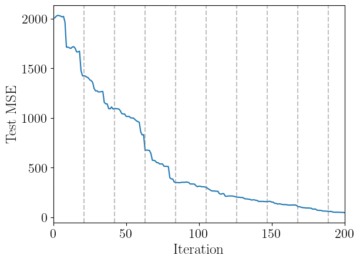
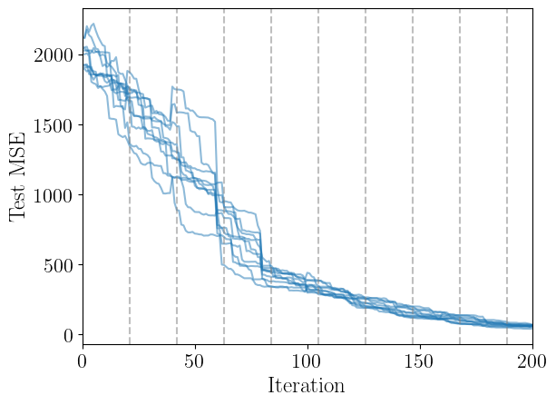
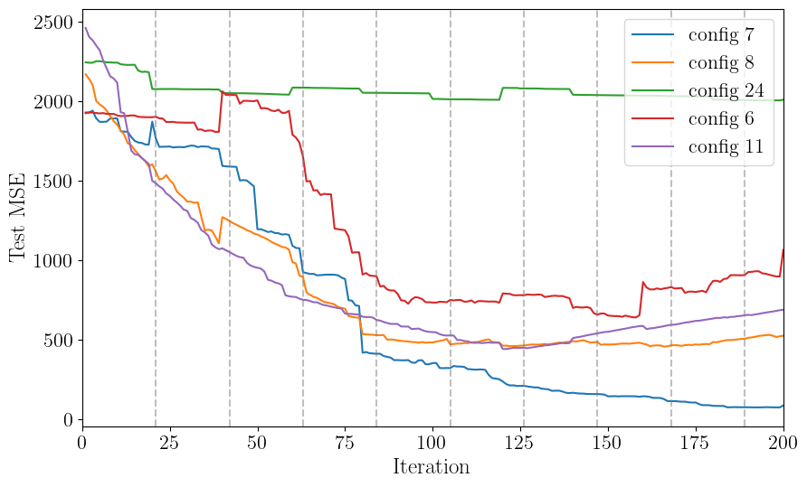

This notebook is available on GitHub.
Interactive online version:

Automated Hyperparameter Selection¶
This tutorial demonstrates how to automatically select optimal Gaussian Process hyperparameters for your surrogate model by testing multiple configurations and choosing the one with the best test set performance.
Why This Matters¶
GP surrogate model performance is highly sensitive to:
Kernel choice (ExpSquared, Matern32, Matern52, etc.)
Data scaling (no scaling, MinMax, StandardScaler)
Other hyperparameters (white noise, amplitude, length scales)
Rather than manually tuning these, we can systematically test combinations and select the best configuration based on test set mean squared error (MSE).
Step 1: Import Required Libraries¶
Import alabi and its submodules along with standard scientific computing libraries.
[10]:
import alabi
import alabi.utility as ut
import alabi.benchmarks as bm
from alabi.core import SurrogateModel
import numpy as np
import pandas as pd
import matplotlib.pyplot as plt
from sklearn import preprocessing
from itertools import product
from matplotlib import rcParams
# rcParams['font.family'] = 'serif'
# rcParams['text.usetex'] = True
random_state = 101
np.random.seed(random_state)
Step 2: Define Problem and Base Configuration¶
Set up the benchmark problem (eggbox function) and define a base configuration for GP hyperparameters. These settings will be partially overridden when we test different combinations.
Key parameters:
ninit: Number of initial training pointsniter: Number of active learning iterationsncore: Number of CPU cores for parallel evaluation (use 1 if experiencing multiprocessing issues)white_noise: Log-scale white noise parameter (increase if you see positive definiteness errors)
[11]:
ninit = 50
niter = 100
basedir = "demo"
kernel = "ExpSquaredKernel"
benchmark = "rosenbrock"
savedir = f"{basedir}/{benchmark}/{kernel}/{ninit}_{niter}"
gp_kwargs = {"kernel": kernel,
"fit_amp": True,
"fit_mean": True,
"fit_white_noise": False,
"white_noise": -12,
"gp_opt_method": "l-bfgs-b",
"hyperopt_method": "cv",
"cv_folds": 8,
"gp_amp_rng": [-1,1],
"gp_scale_rng": [-2,2],
"theta_scaler": alabi.no_scaler,
"y_scaler": alabi.no_scaler}
sm = SurrogateModel(lnlike_fn=bm.eggbox["fn"],
bounds=bm.eggbox["bounds"],
savedir=savedir,
ncore=8,
pool_method="forkserver",
verbose=True,
random_state=random_state)
sm.init_samples(ntrain=ninit, ntest=1000, sampler="lhs")
100%|██████████| 50/50 [00:01<00:00, 41.58it/s]
100%|██████████| 1000/1000 [00:01<00:00, 883.55it/s]
Step 3: Create Hyperparameter Grid¶
Generate all combinations of the hyperparameters we want to test:
Kernels: Different covariance functions capture different smoothness assumptions
Theta scaler: How to scale input parameters
Y scaler: How to scale output values
The dict_to_combinations function creates a Cartesian product of all options.
[12]:
def dict_to_combinations(options_dict):
keys = options_dict.keys()
values = options_dict.values()
return [dict(zip(keys, combo)) for combo in product(*values)]
def combinations_to_dict(combinations):
result = {key: [] for key in combinations[0].keys()}
for combo in combinations:
for key, value in combo.items():
result[key].append(value)
return result
gp_kwarg_options = {"kernel": ["ExpSquaredKernel", "Matern32Kernel", "Matern52Kernel"],
"theta_scaler": [ut.no_scaler, preprocessing.MinMaxScaler(), preprocessing.StandardScaler()],
"y_scaler": [ut.no_scaler, preprocessing.MinMaxScaler(), preprocessing.StandardScaler()]}
variable_settings = dict_to_combinations(gp_kwarg_options)
print(len(variable_settings), "combinations to test")
# get a list of dictionaries with all combinations of settings, where each dictionary is a copy of the original gp_kwargs with the variable settings updated
setting_combos = []
for settings in variable_settings:
new_settings = gp_kwargs.copy()
for key in settings.keys():
new_settings[key] = settings[key]
setting_combos.append(new_settings)
27 combinations to test
Step 4: Test All Hyperparameter Combinations¶
Loop through all combinations and fit a GP for each. The init_gp method returns the test set MSE, which we use to evaluate performance.
Note: This can take several minutes depending on the number of combinations and problem dimensionality. Use try/except to handle configurations that fail to converge.
[ ]:
# docs: collapse ouput
for ii in range(len(setting_combos)):
try:
test_mse = sm.init_gp(**setting_combos[ii], overwrite=True)
except:
test_mse = np.nan
setting_combos[ii]["test_mse"] = test_mse
Initialized GP with squared exponential kernel.
Successfully initialized GP on attempt 1
Optimizing GP hyperparameters using 8-fold cross-validation...
Evaluating 100 hyperparameter candidates using 8-fold CV...
Using multiprocessing pool with 8 processes
Evaluating candidates: 100%|██████████| 100/100 [00:01<00:00, 76.90candidate/s]
Stage 2 candidates: 100%|██████████| 50/50 [00:00<00:00, 523.26candidate/s]
Stage 3 candidates: 100%|██████████| 25/25 [00:00<00:00, 640.14candidate/s]
Initialized GP with squared exponential kernel.
Successfully initialized GP on attempt 1
Optimizing GP hyperparameters using 8-fold cross-validation...
Evaluating 100 hyperparameter candidates using 8-fold CV...
Using multiprocessing pool with 8 processes
Evaluating candidates: 100%|██████████| 100/100 [00:01<00:00, 74.59candidate/s]
Stage 2 candidates: 100%|██████████| 50/50 [00:00<00:00, 566.70candidate/s]
Stage 3 candidates: 100%|██████████| 25/25 [00:00<00:00, 490.42candidate/s]
Initialized GP with squared exponential kernel.
Successfully initialized GP on attempt 1
Optimizing GP hyperparameters using 8-fold cross-validation...
Evaluating 100 hyperparameter candidates using 8-fold CV...
Using multiprocessing pool with 8 processes
Evaluating candidates: 100%|██████████| 100/100 [00:01<00:00, 76.91candidate/s]
Stage 2 candidates: 100%|██████████| 50/50 [00:00<00:00, 557.28candidate/s]
Stage 3 candidates: 100%|██████████| 25/25 [00:00<00:00, 544.44candidate/s]
Initialized GP with squared exponential kernel.
Successfully initialized GP on attempt 1
Optimizing GP hyperparameters using 8-fold cross-validation...
Evaluating 100 hyperparameter candidates using 8-fold CV...
Using multiprocessing pool with 8 processes
Evaluating candidates: 100%|██████████| 100/100 [00:01<00:00, 78.47candidate/s]
Stage 2 candidates: 100%|██████████| 50/50 [00:00<00:00, 663.21candidate/s]
Stage 3 candidates: 100%|██████████| 25/25 [00:00<00:00, 611.07candidate/s]
Initialized GP with squared exponential kernel.
Successfully initialized GP on attempt 1
Optimizing GP hyperparameters using 8-fold cross-validation...
Evaluating 100 hyperparameter candidates using 8-fold CV...
Using multiprocessing pool with 8 processes
Evaluating candidates: 100%|██████████| 100/100 [00:01<00:00, 73.49candidate/s]
Stage 2 candidates: 100%|██████████| 50/50 [00:00<00:00, 633.66candidate/s]
Stage 3 candidates: 100%|██████████| 25/25 [00:00<00:00, 534.16candidate/s]
Initialized GP with squared exponential kernel.
Successfully initialized GP on attempt 1
Optimizing GP hyperparameters using 8-fold cross-validation...
Evaluating 100 hyperparameter candidates using 8-fold CV...
Using multiprocessing pool with 8 processes
Evaluating candidates: 100%|██████████| 100/100 [00:01<00:00, 74.38candidate/s]
Stage 2 candidates: 100%|██████████| 50/50 [00:00<00:00, 599.13candidate/s]
Stage 3 candidates: 100%|██████████| 25/25 [00:00<00:00, 554.49candidate/s]
Initialized GP with squared exponential kernel.
Successfully initialized GP on attempt 1
Optimizing GP hyperparameters using 8-fold cross-validation...
Evaluating 100 hyperparameter candidates using 8-fold CV...
Using multiprocessing pool with 8 processes
Evaluating candidates: 100%|██████████| 100/100 [00:01<00:00, 75.61candidate/s]
Stage 2 candidates: 100%|██████████| 50/50 [00:00<00:00, 604.40candidate/s]
Stage 3 candidates: 100%|██████████| 25/25 [00:00<00:00, 653.94candidate/s]
Initialized GP with squared exponential kernel.
Successfully initialized GP on attempt 1
Optimizing GP hyperparameters using 8-fold cross-validation...
Evaluating 100 hyperparameter candidates using 8-fold CV...
Using multiprocessing pool with 8 processes
Evaluating candidates: 100%|██████████| 100/100 [00:01<00:00, 74.48candidate/s]
Stage 2 candidates: 100%|██████████| 50/50 [00:00<00:00, 548.64candidate/s]
Stage 3 candidates: 100%|██████████| 25/25 [00:00<00:00, 521.47candidate/s]
Initialized GP with squared exponential kernel.
Successfully initialized GP on attempt 1
Optimizing GP hyperparameters using 8-fold cross-validation...
Evaluating 100 hyperparameter candidates using 8-fold CV...
Using multiprocessing pool with 8 processes
Evaluating candidates: 100%|██████████| 100/100 [00:01<00:00, 74.76candidate/s]
Stage 2 candidates: 100%|██████████| 50/50 [00:00<00:00, 604.50candidate/s]
Stage 3 candidates: 100%|██████████| 25/25 [00:00<00:00, 538.93candidate/s]
Initialized GP with Matérn-3/2 kernel.
Successfully initialized GP on attempt 1
Optimizing GP hyperparameters using 8-fold cross-validation...
Evaluating 100 hyperparameter candidates using 8-fold CV...
Using multiprocessing pool with 8 processes
Evaluating candidates: 100%|██████████| 100/100 [00:01<00:00, 73.00candidate/s]
Stage 2 candidates: 100%|██████████| 50/50 [00:00<00:00, 599.46candidate/s]
Stage 3 candidates: 100%|██████████| 25/25 [00:00<00:00, 598.03candidate/s]
Initialized GP with Matérn-3/2 kernel.
Successfully initialized GP on attempt 1
Optimizing GP hyperparameters using 8-fold cross-validation...
Evaluating 100 hyperparameter candidates using 8-fold CV...
Using multiprocessing pool with 8 processes
Evaluating candidates: 100%|██████████| 100/100 [00:01<00:00, 76.16candidate/s]
Stage 2 candidates: 100%|██████████| 50/50 [00:00<00:00, 627.26candidate/s]
Stage 3 candidates: 100%|██████████| 25/25 [00:00<00:00, 579.83candidate/s]
Initialized GP with Matérn-3/2 kernel.
Successfully initialized GP on attempt 1
Optimizing GP hyperparameters using 8-fold cross-validation...
Evaluating 100 hyperparameter candidates using 8-fold CV...
Using multiprocessing pool with 8 processes
Evaluating candidates: 100%|██████████| 100/100 [00:01<00:00, 75.26candidate/s]
Stage 2 candidates: 100%|██████████| 50/50 [00:00<00:00, 534.96candidate/s]
Stage 3 candidates: 100%|██████████| 25/25 [00:00<00:00, 572.38candidate/s]
Initialized GP with Matérn-3/2 kernel.
Successfully initialized GP on attempt 1
Optimizing GP hyperparameters using 8-fold cross-validation...
Evaluating 100 hyperparameter candidates using 8-fold CV...
Using multiprocessing pool with 8 processes
Evaluating candidates: 100%|██████████| 100/100 [00:01<00:00, 76.82candidate/s]
Stage 2 candidates: 100%|██████████| 50/50 [00:00<00:00, 606.17candidate/s]
Stage 3 candidates: 100%|██████████| 25/25 [00:00<00:00, 648.01candidate/s]
Initialized GP with Matérn-3/2 kernel.
Successfully initialized GP on attempt 1
Optimizing GP hyperparameters using 8-fold cross-validation...
Evaluating 100 hyperparameter candidates using 8-fold CV...
Using multiprocessing pool with 8 processes
Evaluating candidates: 100%|██████████| 100/100 [00:01<00:00, 77.32candidate/s]
Stage 2 candidates: 100%|██████████| 50/50 [00:00<00:00, 577.30candidate/s]
Stage 3 candidates: 100%|██████████| 25/25 [00:00<00:00, 564.77candidate/s]
Initialized GP with Matérn-3/2 kernel.
Successfully initialized GP on attempt 1
Optimizing GP hyperparameters using 8-fold cross-validation...
Evaluating 100 hyperparameter candidates using 8-fold CV...
Using multiprocessing pool with 8 processes
Evaluating candidates: 100%|██████████| 100/100 [00:01<00:00, 74.06candidate/s]
Stage 2 candidates: 100%|██████████| 50/50 [00:00<00:00, 623.61candidate/s]
Stage 3 candidates: 100%|██████████| 25/25 [00:00<00:00, 519.48candidate/s]
Initialized GP with Matérn-3/2 kernel.
Successfully initialized GP on attempt 1
Optimizing GP hyperparameters using 8-fold cross-validation...
Evaluating 100 hyperparameter candidates using 8-fold CV...
Using multiprocessing pool with 8 processes
Evaluating candidates: 100%|██████████| 100/100 [00:01<00:00, 77.30candidate/s]
Stage 2 candidates: 100%|██████████| 50/50 [00:00<00:00, 616.13candidate/s]
Stage 3 candidates: 100%|██████████| 25/25 [00:00<00:00, 596.49candidate/s]
Initialized GP with Matérn-3/2 kernel.
Successfully initialized GP on attempt 1
Optimizing GP hyperparameters using 8-fold cross-validation...
Evaluating 100 hyperparameter candidates using 8-fold CV...
Using multiprocessing pool with 8 processes
Evaluating candidates: 100%|██████████| 100/100 [00:01<00:00, 72.96candidate/s]
Stage 2 candidates: 100%|██████████| 50/50 [00:00<00:00, 516.64candidate/s]
Stage 3 candidates: 100%|██████████| 25/25 [00:00<00:00, 519.51candidate/s]
Initialized GP with Matérn-3/2 kernel.
Successfully initialized GP on attempt 1
Optimizing GP hyperparameters using 8-fold cross-validation...
Evaluating 100 hyperparameter candidates using 8-fold CV...
Using multiprocessing pool with 8 processes
Evaluating candidates: 100%|██████████| 100/100 [00:01<00:00, 73.47candidate/s]
Stage 2 candidates: 100%|██████████| 50/50 [00:00<00:00, 568.15candidate/s]
Stage 3 candidates: 100%|██████████| 25/25 [00:00<00:00, 576.21candidate/s]
Initialized GP with Matérn-5/2 kernel.
Successfully initialized GP on attempt 1
Optimizing GP hyperparameters using 8-fold cross-validation...
Evaluating 100 hyperparameter candidates using 8-fold CV...
Using multiprocessing pool with 8 processes
Evaluating candidates: 100%|██████████| 100/100 [00:01<00:00, 74.79candidate/s]
Stage 2 candidates: 100%|██████████| 50/50 [00:00<00:00, 638.66candidate/s]
Stage 3 candidates: 100%|██████████| 25/25 [00:00<00:00, 706.53candidate/s]
Initialized GP with Matérn-5/2 kernel.
Successfully initialized GP on attempt 1
Optimizing GP hyperparameters using 8-fold cross-validation...
Evaluating 100 hyperparameter candidates using 8-fold CV...
Using multiprocessing pool with 8 processes
Evaluating candidates: 100%|██████████| 100/100 [00:01<00:00, 75.78candidate/s]
Stage 2 candidates: 100%|██████████| 50/50 [00:00<00:00, 538.09candidate/s]
Stage 3 candidates: 100%|██████████| 25/25 [00:00<00:00, 566.24candidate/s]
Initialized GP with Matérn-5/2 kernel.
Successfully initialized GP on attempt 1
Optimizing GP hyperparameters using 8-fold cross-validation...
Evaluating 100 hyperparameter candidates using 8-fold CV...
Using multiprocessing pool with 8 processes
Evaluating candidates: 100%|██████████| 100/100 [00:01<00:00, 72.68candidate/s]
Stage 2 candidates: 100%|██████████| 50/50 [00:00<00:00, 581.48candidate/s]
Stage 3 candidates: 100%|██████████| 25/25 [00:00<00:00, 564.56candidate/s]
Initialized GP with Matérn-5/2 kernel.
Successfully initialized GP on attempt 1
Optimizing GP hyperparameters using 8-fold cross-validation...
Evaluating 100 hyperparameter candidates using 8-fold CV...
Using multiprocessing pool with 8 processes
Evaluating candidates: 100%|██████████| 100/100 [00:01<00:00, 75.33candidate/s]
Stage 2 candidates: 100%|██████████| 50/50 [00:00<00:00, 647.53candidate/s]
Stage 3 candidates: 100%|██████████| 25/25 [00:00<00:00, 594.77candidate/s]
Initialized GP with Matérn-5/2 kernel.
Successfully initialized GP on attempt 1
Optimizing GP hyperparameters using 8-fold cross-validation...
Evaluating 100 hyperparameter candidates using 8-fold CV...
Using multiprocessing pool with 8 processes
Evaluating candidates: 100%|██████████| 100/100 [00:01<00:00, 76.12candidate/s]
Stage 2 candidates: 100%|██████████| 50/50 [00:00<00:00, 560.43candidate/s]
Stage 3 candidates: 100%|██████████| 25/25 [00:00<00:00, 584.50candidate/s]
Initialized GP with Matérn-5/2 kernel.
Successfully initialized GP on attempt 1
Optimizing GP hyperparameters using 8-fold cross-validation...
Evaluating 100 hyperparameter candidates using 8-fold CV...
Using multiprocessing pool with 8 processes
Evaluating candidates: 100%|██████████| 100/100 [00:01<00:00, 76.31candidate/s]
Stage 2 candidates: 100%|██████████| 50/50 [00:00<00:00, 666.54candidate/s]
Stage 3 candidates: 100%|██████████| 25/25 [00:00<00:00, 543.66candidate/s]
Initialized GP with Matérn-5/2 kernel.
Successfully initialized GP on attempt 1
Optimizing GP hyperparameters using 8-fold cross-validation...
Evaluating 100 hyperparameter candidates using 8-fold CV...
Using multiprocessing pool with 8 processes
Evaluating candidates: 100%|██████████| 100/100 [00:01<00:00, 73.53candidate/s]
Stage 2 candidates: 100%|██████████| 50/50 [00:00<00:00, 686.43candidate/s]
Stage 3 candidates: 100%|██████████| 25/25 [00:00<00:00, 644.52candidate/s]
Initialized GP with Matérn-5/2 kernel.
Successfully initialized GP on attempt 1
Optimizing GP hyperparameters using 8-fold cross-validation...
Evaluating 100 hyperparameter candidates using 8-fold CV...
Using multiprocessing pool with 8 processes
Evaluating candidates: 100%|██████████| 100/100 [00:01<00:00, 75.10candidate/s]
Stage 2 candidates: 100%|██████████| 50/50 [00:00<00:00, 552.11candidate/s]
Stage 3 candidates: 100%|██████████| 25/25 [00:00<00:00, 550.62candidate/s]
Initialized GP with Matérn-5/2 kernel.
Successfully initialized GP on attempt 1
Optimizing GP hyperparameters using 8-fold cross-validation...
Evaluating 100 hyperparameter candidates using 8-fold CV...
Using multiprocessing pool with 8 processes
Evaluating candidates: 100%|██████████| 100/100 [00:01<00:00, 76.82candidate/s]
Stage 2 candidates: 100%|██████████| 50/50 [00:00<00:00, 655.39candidate/s]
Stage 3 candidates: 100%|██████████| 25/25 [00:00<00:00, 611.47candidate/s]
Step 5: Analyze Results¶
Convert results to a pandas DataFrame and inspect the top-performing configurations. Lower test MSE indicates better generalization performance.
[14]:
results = pd.DataFrame(data=combinations_to_dict(setting_combos))
top_fits = results.sort_values("test_mse").head(5)
top_fits
[14]:
| kernel | fit_amp | fit_mean | fit_white_noise | white_noise | gp_opt_method | hyperopt_method | cv_folds | gp_amp_rng | gp_scale_rng | theta_scaler | y_scaler | test_mse | |
|---|---|---|---|---|---|---|---|---|---|---|---|---|---|
| 7 | ExpSquaredKernel | True | True | False | -12 | l-bfgs-b | cv | 8 | [-1, 1] | [-2, 2] | StandardScaler() | MinMaxScaler() | 1993.447717 |
| 8 | ExpSquaredKernel | True | True | False | -12 | l-bfgs-b | cv | 8 | [-1, 1] | [-2, 2] | StandardScaler() | StandardScaler() | 1998.471961 |
| 24 | Matern52Kernel | True | True | False | -12 | l-bfgs-b | cv | 8 | [-1, 1] | [-2, 2] | StandardScaler() | no_scaler | 2029.055811 |
| 6 | ExpSquaredKernel | True | True | False | -12 | l-bfgs-b | cv | 8 | [-1, 1] | [-2, 2] | StandardScaler() | no_scaler | 2066.363090 |
| 11 | Matern32Kernel | True | True | False | -12 | l-bfgs-b | cv | 8 | [-1, 1] | [-2, 2] | no_scaler | StandardScaler() | 2067.461220 |
Step 6: Extract Best Configuration¶
Identify the hyperparameter configuration with the lowest test MSE. This will be used for active learning.
[15]:
best_gp_results = results[results["test_mse"] == results["test_mse"].min()]
best_gp_results
[15]:
| kernel | fit_amp | fit_mean | fit_white_noise | white_noise | gp_opt_method | hyperopt_method | cv_folds | gp_amp_rng | gp_scale_rng | theta_scaler | y_scaler | test_mse | |
|---|---|---|---|---|---|---|---|---|---|---|---|---|---|
| 7 | ExpSquaredKernel | True | True | False | -12 | l-bfgs-b | cv | 8 | [-1, 1] | [-2, 2] | StandardScaler() | MinMaxScaler() | 1993.447717 |
Step 7: Run Active Learning¶
Use the optimal GP configuration for active learning. The BAPE (Bayesian Active Posterior Estimation) algorithm iteratively selects new training points to improve the surrogate model.
Key active learning parameters:
algorithm: Acquisition function (“bape”, “agp”, or “jones”)gp_opt_freq: How often to reoptimize GP hyperparameters during trainingobj_opt_method: Optimization method for acquisition functionnopt: Number of optimization restarts for acquisition function
[ ]:
# docs: collapse ouput
best_gp_kwargs = best_gp_results[gp_kwargs.keys()].to_dict(orient="records")[0]
al_kwargs = {"algorithm": "bape",
"gp_opt_freq": 20,
"obj_opt_method": "nelder-mead",
"nopt": 6}
sm.init_gp(**best_gp_kwargs, overwrite=True)
sm.active_train(niter=200, **al_kwargs)
Initialized GP with squared exponential kernel.
Successfully initialized GP on attempt 1
Optimizing GP hyperparameters using 8-fold cross-validation...
Evaluating 100 hyperparameter candidates using 8-fold CV...
Using multiprocessing pool with 8 processes
Evaluating candidates: 100%|██████████| 100/100 [00:01<00:00, 72.90candidate/s]
Stage 2 candidates: 100%|██████████| 50/50 [00:00<00:00, 601.80candidate/s]
Stage 3 candidates: 100%|██████████| 25/25 [00:00<00:00, 479.01candidate/s]
Running 200 active learning iterations using bape...
10%|▉ | 19/200 [00:00<00:08, 20.85it/s]
Optimizing GP hyperparameters using 8-fold cross-validation...
Evaluating 100 hyperparameter candidates using 8-fold CV...
Using multiprocessing pool with 8 processes
Evaluating candidates: 100%|██████████| 100/100 [00:01<00:00, 71.35candidate/s]
Stage 2 candidates: 100%|██████████| 50/50 [00:00<00:00, 527.53candidate/s]
Stage 3 candidates: 100%|██████████| 25/25 [00:00<00:00, 514.32candidate/s]
11%|█ | 22/200 [00:02<00:39, 4.50it/s]
Train MSE: 6.802807443728829e-09
Test MSE: 1423.2728422518471
18%|█▊ | 37/200 [00:03<00:11, 14.23it/s]
Optimizing GP hyperparameters using 8-fold cross-validation...
Evaluating 100 hyperparameter candidates using 8-fold CV...
Using multiprocessing pool with 8 processes
Evaluating candidates: 100%|██████████| 100/100 [00:01<00:00, 74.55candidate/s]
Stage 2 candidates: 100%|██████████| 50/50 [00:00<00:00, 523.94candidate/s]
Stage 3 candidates: 100%|██████████| 25/25 [00:00<00:00, 558.54candidate/s]
22%|██▏ | 43/200 [00:05<00:26, 6.02it/s]
Train MSE: 1.0707221575289852e-09
Test MSE: 1109.945138616352
29%|██▉ | 58/200 [00:05<00:08, 16.08it/s]
Optimizing GP hyperparameters using 8-fold cross-validation...
Evaluating 100 hyperparameter candidates using 8-fold CV...
Using multiprocessing pool with 8 processes
Evaluating candidates: 100%|██████████| 100/100 [00:01<00:00, 73.61candidate/s]
Stage 2 candidates: 100%|██████████| 50/50 [00:00<00:00, 557.97candidate/s]
Stage 3 candidates: 100%|██████████| 25/25 [00:00<00:00, 540.51candidate/s]
32%|███▏ | 64/200 [00:07<00:22, 6.11it/s]
Train MSE: 1.6884779897860132e-09
Test MSE: 859.9506167317436
39%|███▉ | 78/200 [00:08<00:08, 15.24it/s]
Optimizing GP hyperparameters using 8-fold cross-validation...
Evaluating 100 hyperparameter candidates using 8-fold CV...
Using multiprocessing pool with 8 processes
Evaluating candidates: 100%|██████████| 100/100 [00:01<00:00, 74.31candidate/s]
Stage 2 candidates: 100%|██████████| 50/50 [00:00<00:00, 505.56candidate/s]
Stage 3 candidates: 100%|██████████| 25/25 [00:00<00:00, 460.23candidate/s]
42%|████▏ | 84/200 [00:10<00:19, 5.94it/s]
Train MSE: 6.5594894725882725e-09
Test MSE: 397.84875803334626
50%|████▉ | 99/200 [00:10<00:06, 15.18it/s]
Optimizing GP hyperparameters using 8-fold cross-validation...
Evaluating 100 hyperparameter candidates using 8-fold CV...
Using multiprocessing pool with 8 processes
Evaluating candidates: 100%|██████████| 100/100 [00:01<00:00, 70.59candidate/s]
Stage 2 candidates: 100%|██████████| 50/50 [00:00<00:00, 467.90candidate/s]
Stage 3 candidates: 100%|██████████| 25/25 [00:00<00:00, 429.06candidate/s]
51%|█████ | 102/200 [00:12<00:22, 4.41it/s]
Train MSE: 8.810685097929644e-07
Test MSE: 313.0669437412503
58%|█████▊ | 117/200 [00:13<00:06, 12.61it/s]
Optimizing GP hyperparameters using 8-fold cross-validation...
Evaluating 100 hyperparameter candidates using 8-fold CV...
Using multiprocessing pool with 8 processes
Evaluating candidates: 100%|██████████| 100/100 [00:01<00:00, 70.14candidate/s]
Stage 2 candidates: 100%|██████████| 50/50 [00:00<00:00, 435.44candidate/s]
Stage 3 candidates: 100%|██████████| 25/25 [00:00<00:00, 410.71candidate/s]
62%|██████▏ | 123/200 [00:15<00:13, 5.53it/s]
Train MSE: 2.753018405837765e-06
Test MSE: 213.64323819228645
70%|██████▉ | 139/200 [00:16<00:04, 14.75it/s]
Optimizing GP hyperparameters using 8-fold cross-validation...
Evaluating 100 hyperparameter candidates using 8-fold CV...
Using multiprocessing pool with 8 processes
Evaluating candidates: 100%|██████████| 100/100 [00:01<00:00, 68.93candidate/s]
Stage 2 candidates: 100%|██████████| 50/50 [00:00<00:00, 418.18candidate/s]
Stage 3 candidates: 100%|██████████| 25/25 [00:00<00:00, 370.82candidate/s]
72%|███████▏ | 144/200 [00:18<00:11, 5.07it/s]
Train MSE: 3.46250344882714e-06
Test MSE: 168.90221736927697
78%|███████▊ | 157/200 [00:18<00:03, 13.45it/s]
Optimizing GP hyperparameters using 8-fold cross-validation...
Evaluating 100 hyperparameter candidates using 8-fold CV...
Using multiprocessing pool with 8 processes
Evaluating candidates: 100%|██████████| 100/100 [00:01<00:00, 70.43candidate/s]
Stage 2 candidates: 100%|██████████| 50/50 [00:00<00:00, 416.33candidate/s]
Stage 3 candidates: 100%|██████████| 25/25 [00:00<00:00, 388.10candidate/s]
82%|████████▏ | 163/200 [00:20<00:06, 5.33it/s]
Train MSE: 6.3938661153302775e-06
Test MSE: 126.81810245857574
89%|████████▉ | 178/200 [00:21<00:01, 15.01it/s]
Optimizing GP hyperparameters using 8-fold cross-validation...
Evaluating 100 hyperparameter candidates using 8-fold CV...
Using multiprocessing pool with 8 processes
Evaluating candidates: 100%|██████████| 100/100 [00:01<00:00, 64.76candidate/s]
Stage 2 candidates: 100%|██████████| 50/50 [00:00<00:00, 280.01candidate/s]
Stage 3 candidates: 100%|██████████| 25/25 [00:00<00:00, 267.39candidate/s]
91%|█████████ | 182/200 [00:23<00:04, 3.89it/s]
Train MSE: 9.562653551995795e-06
Test MSE: 82.29150642846184
99%|█████████▉| 198/200 [00:24<00:00, 14.69it/s]
Optimizing GP hyperparameters using 8-fold cross-validation...
Evaluating 100 hyperparameter candidates using 8-fold CV...
Using multiprocessing pool with 8 processes
Evaluating candidates: 100%|██████████| 100/100 [00:01<00:00, 66.18candidate/s]
Stage 2 candidates: 100%|██████████| 50/50 [00:00<00:00, 206.77candidate/s]
Stage 3 candidates: 100%|██████████| 25/25 [00:00<00:00, 183.50candidate/s]
100%|██████████| 200/200 [00:26<00:00, 7.55it/s]
Train MSE: 1.2926335799779652e-05
Test MSE: 45.32254541389654
Caching model to demo/rosenbrock/ExpSquaredKernel/50_100/surrogate_model...
Step 8: Visualize Training Progress¶
Plot the test set MSE over active learning iterations. A decreasing trend indicates the surrogate model is improving. We can also highlight which iterations the GP hyperparameters are re-optimized (vertical gray lines).
[17]:
plt.plot(sm.training_results["iteration"], sm.training_results["test_mse"])
for ii in range(0, sm.nactive, sm.gp_opt_freq+1):
plt.axvline(ii, color="gray", linestyle="--", alpha=0.5)
plt.xlabel("Iteration", fontsize=18)
plt.ylabel("Test MSE", fontsize=18)
plt.xlim(0, sm.nactive)
plt.show()

How much does random variance affect the performance?
Let’s do a trial where we do 10 attempts with the same hyperparameter configuration and track the test mse:
[20]:
# docs: collapse ouput
best_gp_kwargs = best_gp_results[gp_kwargs.keys()].to_dict(orient="records")[0]
test_mse_trials = []
for ii in range(10):
al_kwargs = {"algorithm": "bape",
"gp_opt_freq": 20,
"obj_opt_method": "nelder-mead",
"nopt": 6}
sm.init_gp(**best_gp_kwargs, overwrite=True)
sm.active_train(niter=200, **al_kwargs)
test_mse_trials.append(sm.training_results["test_mse"])
Initialized GP with squared exponential kernel.
Successfully initialized GP on attempt 1
Optimizing GP hyperparameters using 8-fold cross-validation...
Evaluating 100 hyperparameter candidates using 8-fold CV...
Using multiprocessing pool with 8 processes
Evaluating candidates: 100%|██████████| 100/100 [00:01<00:00, 73.48candidate/s]
Stage 2 candidates: 100%|██████████| 50/50 [00:00<00:00, 562.47candidate/s]
Stage 3 candidates: 100%|██████████| 25/25 [00:00<00:00, 599.81candidate/s]
Running 200 active learning iterations using bape...
9%|▉ | 18/200 [00:00<00:08, 21.55it/s]
Optimizing GP hyperparameters using 8-fold cross-validation...
Evaluating 100 hyperparameter candidates using 8-fold CV...
Using multiprocessing pool with 8 processes
Evaluating candidates: 100%|██████████| 100/100 [00:01<00:00, 74.24candidate/s]
Stage 2 candidates: 100%|██████████| 50/50 [00:00<00:00, 534.40candidate/s]
Stage 3 candidates: 100%|██████████| 25/25 [00:00<00:00, 460.91candidate/s]
12%|█▏ | 24/200 [00:02<00:28, 6.13it/s]
Train MSE: 3.719071227006239e-08
Test MSE: 1675.3478824575752
20%|█▉ | 39/200 [00:03<00:10, 15.97it/s]
Optimizing GP hyperparameters using 8-fold cross-validation...
Evaluating 100 hyperparameter candidates using 8-fold CV...
Using multiprocessing pool with 8 processes
Evaluating candidates: 100%|██████████| 100/100 [00:01<00:00, 74.78candidate/s]
Stage 2 candidates: 100%|██████████| 50/50 [00:00<00:00, 519.78candidate/s]
Stage 3 candidates: 100%|██████████| 25/25 [00:00<00:00, 511.43candidate/s]
21%|██ | 42/200 [00:05<00:33, 4.67it/s]
Train MSE: 6.744243987095482e-09
Test MSE: 1258.6283045197583
28%|██▊ | 57/200 [00:05<00:10, 13.68it/s]
Optimizing GP hyperparameters using 8-fold cross-validation...
Evaluating 100 hyperparameter candidates using 8-fold CV...
Using multiprocessing pool with 8 processes
Evaluating candidates: 100%|██████████| 100/100 [00:01<00:00, 71.84candidate/s]
Stage 2 candidates: 100%|██████████| 50/50 [00:00<00:00, 473.64candidate/s]
Stage 3 candidates: 100%|██████████| 25/25 [00:00<00:00, 492.36candidate/s]
32%|███▏ | 63/200 [00:07<00:23, 5.78it/s]
Train MSE: 3.2500342827823295e-08
Test MSE: 887.6952051879211
39%|███▉ | 78/200 [00:08<00:07, 15.30it/s]
Optimizing GP hyperparameters using 8-fold cross-validation...
Evaluating 100 hyperparameter candidates using 8-fold CV...
Using multiprocessing pool with 8 processes
Evaluating candidates: 100%|██████████| 100/100 [00:01<00:00, 72.22candidate/s]
Stage 2 candidates: 100%|██████████| 50/50 [00:00<00:00, 516.26candidate/s]
Stage 3 candidates: 100%|██████████| 25/25 [00:00<00:00, 511.86candidate/s]
42%|████▏ | 84/200 [00:10<00:19, 5.98it/s]
Train MSE: 3.735731917569783e-09
Test MSE: 550.1851712976901
50%|████▉ | 99/200 [00:10<00:06, 14.99it/s]
Optimizing GP hyperparameters using 8-fold cross-validation...
Evaluating 100 hyperparameter candidates using 8-fold CV...
Using multiprocessing pool with 8 processes
Evaluating candidates: 100%|██████████| 100/100 [00:01<00:00, 71.26candidate/s]
Stage 2 candidates: 100%|██████████| 50/50 [00:00<00:00, 367.43candidate/s]
Stage 3 candidates: 100%|██████████| 25/25 [00:00<00:00, 367.13candidate/s]
51%|█████ | 102/200 [00:12<00:22, 4.38it/s]
Train MSE: 2.532733760495293e-07
Test MSE: 342.388164797043
59%|█████▉ | 118/200 [00:13<00:05, 14.34it/s]
Optimizing GP hyperparameters using 8-fold cross-validation...
Evaluating 100 hyperparameter candidates using 8-fold CV...
Using multiprocessing pool with 8 processes
Evaluating candidates: 100%|██████████| 100/100 [00:01<00:00, 68.72candidate/s]
Stage 2 candidates: 100%|██████████| 50/50 [00:00<00:00, 473.95candidate/s]
Stage 3 candidates: 100%|██████████| 25/25 [00:00<00:00, 409.49candidate/s]
62%|██████▏ | 124/200 [00:15<00:13, 5.53it/s]
Train MSE: 3.900161608407386e-06
Test MSE: 280.1721407492547
69%|██████▉ | 138/200 [00:16<00:04, 13.58it/s]
Optimizing GP hyperparameters using 8-fold cross-validation...
Evaluating 100 hyperparameter candidates using 8-fold CV...
Using multiprocessing pool with 8 processes
Evaluating candidates: 100%|██████████| 100/100 [00:01<00:00, 67.27candidate/s]
Stage 2 candidates: 100%|██████████| 50/50 [00:00<00:00, 403.93candidate/s]
Stage 3 candidates: 100%|██████████| 25/25 [00:00<00:00, 386.17candidate/s]
71%|███████ | 142/200 [00:18<00:12, 4.50it/s]
Train MSE: 4.596332002234543e-06
Test MSE: 176.34355811486625
78%|███████▊ | 157/200 [00:18<00:02, 14.80it/s]
Optimizing GP hyperparameters using 8-fold cross-validation...
Evaluating 100 hyperparameter candidates using 8-fold CV...
Using multiprocessing pool with 8 processes
Evaluating candidates: 100%|██████████| 100/100 [00:01<00:00, 66.66candidate/s]
Stage 2 candidates: 100%|██████████| 50/50 [00:00<00:00, 396.82candidate/s]
Stage 3 candidates: 100%|██████████| 25/25 [00:00<00:00, 376.42candidate/s]
81%|████████ | 162/200 [00:20<00:08, 4.50it/s]
Train MSE: 1.4680642944071518e-06
Test MSE: 148.30712200562223
89%|████████▉ | 178/200 [00:21<00:01, 15.04it/s]
Optimizing GP hyperparameters using 8-fold cross-validation...
Evaluating 100 hyperparameter candidates using 8-fold CV...
Using multiprocessing pool with 8 processes
Evaluating candidates: 100%|██████████| 100/100 [00:01<00:00, 67.68candidate/s]
Stage 2 candidates: 100%|██████████| 50/50 [00:00<00:00, 322.16candidate/s]
Stage 3 candidates: 100%|██████████| 25/25 [00:00<00:00, 308.92candidate/s]
91%|█████████ | 182/200 [00:23<00:04, 4.03it/s]
Train MSE: 1.195429862852549e-07
Test MSE: 81.42424044093002
100%|█████████▉| 199/200 [00:24<00:00, 15.74it/s]
Optimizing GP hyperparameters using 8-fold cross-validation...
Evaluating 100 hyperparameter candidates using 8-fold CV...
Using multiprocessing pool with 8 processes
Evaluating candidates: 100%|██████████| 100/100 [00:01<00:00, 61.36candidate/s]
Stage 2 candidates: 100%|██████████| 50/50 [00:00<00:00, 284.51candidate/s]
Stage 3 candidates: 100%|██████████| 25/25 [00:00<00:00, 282.27candidate/s]
100%|██████████| 200/200 [00:26<00:00, 7.49it/s]
Train MSE: 1.0137772509555158e-06
Test MSE: 64.00013378384305
Caching model to demo/rosenbrock/ExpSquaredKernel/50_100/surrogate_model...
Initialized GP with squared exponential kernel.
Successfully initialized GP on attempt 1
Optimizing GP hyperparameters using 8-fold cross-validation...
Evaluating 100 hyperparameter candidates using 8-fold CV...
Using multiprocessing pool with 8 processes
Evaluating candidates: 100%|██████████| 100/100 [00:01<00:00, 75.01candidate/s]
Stage 2 candidates: 100%|██████████| 50/50 [00:00<00:00, 499.56candidate/s]
Stage 3 candidates: 100%|██████████| 25/25 [00:00<00:00, 511.85candidate/s]
Running 200 active learning iterations using bape...
10%|▉ | 19/200 [00:00<00:08, 21.46it/s]
Optimizing GP hyperparameters using 8-fold cross-validation...
Evaluating 100 hyperparameter candidates using 8-fold CV...
Using multiprocessing pool with 8 processes
Evaluating candidates: 100%|██████████| 100/100 [00:01<00:00, 71.80candidate/s]
Stage 2 candidates: 100%|██████████| 50/50 [00:00<00:00, 586.59candidate/s]
Stage 3 candidates: 100%|██████████| 25/25 [00:00<00:00, 500.07candidate/s]
11%|█ | 22/200 [00:02<00:39, 4.53it/s]
Train MSE: 3.560519418601385e-10
Test MSE: 1770.0760778512665
18%|█▊ | 37/200 [00:03<00:11, 13.64it/s]
Optimizing GP hyperparameters using 8-fold cross-validation...
Evaluating 100 hyperparameter candidates using 8-fold CV...
Using multiprocessing pool with 8 processes
Evaluating candidates: 100%|██████████| 100/100 [00:01<00:00, 71.59candidate/s]
Stage 2 candidates: 100%|██████████| 50/50 [00:00<00:00, 594.79candidate/s]
Stage 3 candidates: 100%|██████████| 25/25 [00:00<00:00, 521.18candidate/s]
22%|██▏ | 43/200 [00:05<00:26, 5.86it/s]
Train MSE: 6.568875046778071e-10
Test MSE: 1279.0780335844506
29%|██▉ | 58/200 [00:05<00:08, 16.17it/s]
Optimizing GP hyperparameters using 8-fold cross-validation...
Evaluating 100 hyperparameter candidates using 8-fold CV...
Using multiprocessing pool with 8 processes
Evaluating candidates: 100%|██████████| 100/100 [00:01<00:00, 73.36candidate/s]
Stage 2 candidates: 100%|██████████| 50/50 [00:00<00:00, 488.96candidate/s]
Stage 3 candidates: 100%|██████████| 25/25 [00:00<00:00, 514.03candidate/s]
32%|███▏ | 64/200 [00:07<00:22, 6.07it/s]
Train MSE: 6.249054904397229e-10
Test MSE: 1083.781917446927
40%|███▉ | 79/200 [00:08<00:08, 14.93it/s]
Optimizing GP hyperparameters using 8-fold cross-validation...
Evaluating 100 hyperparameter candidates using 8-fold CV...
Using multiprocessing pool with 8 processes
Evaluating candidates: 100%|██████████| 100/100 [00:01<00:00, 69.05candidate/s]
Stage 2 candidates: 100%|██████████| 50/50 [00:00<00:00, 526.42candidate/s]
Stage 3 candidates: 100%|██████████| 25/25 [00:00<00:00, 474.55candidate/s]
41%|████ | 82/200 [00:10<00:27, 4.37it/s]
Train MSE: 4.361021511935842e-09
Test MSE: 462.65729861444936
50%|████▉ | 99/200 [00:10<00:06, 14.52it/s]
Optimizing GP hyperparameters using 8-fold cross-validation...
Evaluating 100 hyperparameter candidates using 8-fold CV...
Using multiprocessing pool with 8 processes
Evaluating candidates: 100%|██████████| 100/100 [00:01<00:00, 71.60candidate/s]
Stage 2 candidates: 100%|██████████| 50/50 [00:00<00:00, 486.47candidate/s]
Stage 3 candidates: 100%|██████████| 25/25 [00:00<00:00, 376.94candidate/s]
51%|█████ | 102/200 [00:12<00:22, 4.28it/s]
Train MSE: 4.788824333459177e-08
Test MSE: 298.76070900738836
58%|█████▊ | 117/200 [00:13<00:06, 13.16it/s]
Optimizing GP hyperparameters using 8-fold cross-validation...
Evaluating 100 hyperparameter candidates using 8-fold CV...
Using multiprocessing pool with 8 processes
Evaluating candidates: 100%|██████████| 100/100 [00:01<00:00, 71.17candidate/s]
Stage 2 candidates: 100%|██████████| 50/50 [00:00<00:00, 423.27candidate/s]
Stage 3 candidates: 100%|██████████| 25/25 [00:00<00:00, 402.37candidate/s]
61%|██████ | 122/200 [00:15<00:15, 5.11it/s]
Train MSE: 2.339031486508746e-08
Test MSE: 225.99165480494216
70%|██████▉ | 139/200 [00:16<00:03, 15.95it/s]
Optimizing GP hyperparameters using 8-fold cross-validation...
Evaluating 100 hyperparameter candidates using 8-fold CV...
Using multiprocessing pool with 8 processes
Evaluating candidates: 100%|██████████| 100/100 [00:01<00:00, 72.38candidate/s]
Stage 2 candidates: 100%|██████████| 50/50 [00:00<00:00, 422.53candidate/s]
Stage 3 candidates: 100%|██████████| 25/25 [00:00<00:00, 341.47candidate/s]
72%|███████▏ | 144/200 [00:18<00:10, 5.16it/s]
Train MSE: 5.3217179993381077e-08
Test MSE: 143.97341481369497
80%|███████▉ | 159/200 [00:18<00:02, 15.17it/s]
Optimizing GP hyperparameters using 8-fold cross-validation...
Evaluating 100 hyperparameter candidates using 8-fold CV...
Using multiprocessing pool with 8 processes
Evaluating candidates: 100%|██████████| 100/100 [00:01<00:00, 69.03candidate/s]
Stage 2 candidates: 100%|██████████| 50/50 [00:00<00:00, 388.77candidate/s]
Stage 3 candidates: 100%|██████████| 25/25 [00:00<00:00, 365.07candidate/s]
82%|████████▏ | 164/200 [00:20<00:07, 4.81it/s]
Train MSE: 5.355430823756682e-09
Test MSE: 107.95346401898145
90%|████████▉ | 179/200 [00:21<00:01, 14.50it/s]
Optimizing GP hyperparameters using 8-fold cross-validation...
Evaluating 100 hyperparameter candidates using 8-fold CV...
Using multiprocessing pool with 8 processes
Evaluating candidates: 100%|██████████| 100/100 [00:01<00:00, 66.01candidate/s]
Stage 2 candidates: 100%|██████████| 50/50 [00:00<00:00, 255.01candidate/s]
Stage 3 candidates: 100%|██████████| 25/25 [00:00<00:00, 272.30candidate/s]
92%|█████████▏| 183/200 [00:23<00:04, 4.18it/s]
Train MSE: 3.4418980781260547e-08
Test MSE: 67.24506155653378
100%|█████████▉| 199/200 [00:24<00:00, 14.73it/s]
Optimizing GP hyperparameters using 8-fold cross-validation...
Evaluating 100 hyperparameter candidates using 8-fold CV...
Using multiprocessing pool with 8 processes
Evaluating candidates: 100%|██████████| 100/100 [00:01<00:00, 66.29candidate/s]
Stage 2 candidates: 100%|██████████| 50/50 [00:00<00:00, 264.54candidate/s]
Stage 3 candidates: 100%|██████████| 25/25 [00:00<00:00, 261.24candidate/s]
100%|██████████| 200/200 [00:26<00:00, 7.53it/s]
Train MSE: 2.5523903497979204e-09
Test MSE: 66.85416136015328
Caching model to demo/rosenbrock/ExpSquaredKernel/50_100/surrogate_model...
Initialized GP with squared exponential kernel.
Successfully initialized GP on attempt 1
Optimizing GP hyperparameters using 8-fold cross-validation...
Evaluating 100 hyperparameter candidates using 8-fold CV...
Using multiprocessing pool with 8 processes
Evaluating candidates: 100%|██████████| 100/100 [00:01<00:00, 76.27candidate/s]
Stage 2 candidates: 100%|██████████| 50/50 [00:00<00:00, 599.02candidate/s]
Stage 3 candidates: 100%|██████████| 25/25 [00:00<00:00, 524.22candidate/s]
Running 200 active learning iterations using bape...
9%|▉ | 18/200 [00:00<00:07, 22.99it/s]
Optimizing GP hyperparameters using 8-fold cross-validation...
Evaluating 100 hyperparameter candidates using 8-fold CV...
Using multiprocessing pool with 8 processes
Evaluating candidates: 100%|██████████| 100/100 [00:01<00:00, 75.04candidate/s]
Stage 2 candidates: 100%|██████████| 50/50 [00:00<00:00, 551.55candidate/s]
Stage 3 candidates: 100%|██████████| 25/25 [00:00<00:00, 501.63candidate/s]
12%|█▏ | 24/200 [00:02<00:28, 6.26it/s]
Train MSE: 4.2652726381696875e-07
Test MSE: 1717.012477296606
20%|█▉ | 39/200 [00:03<00:10, 15.85it/s]
Optimizing GP hyperparameters using 8-fold cross-validation...
Evaluating 100 hyperparameter candidates using 8-fold CV...
Using multiprocessing pool with 8 processes
Evaluating candidates: 100%|██████████| 100/100 [00:01<00:00, 72.61candidate/s]
Stage 2 candidates: 100%|██████████| 50/50 [00:00<00:00, 570.07candidate/s]
Stage 3 candidates: 100%|██████████| 25/25 [00:00<00:00, 517.51candidate/s]
21%|██ | 42/200 [00:05<00:34, 4.59it/s]
Train MSE: 4.546475072892644e-07
Test MSE: 1120.322446763773
28%|██▊ | 57/200 [00:05<00:10, 13.72it/s]
Optimizing GP hyperparameters using 8-fold cross-validation...
Evaluating 100 hyperparameter candidates using 8-fold CV...
Using multiprocessing pool with 8 processes
Evaluating candidates: 100%|██████████| 100/100 [00:01<00:00, 75.11candidate/s]
Stage 2 candidates: 100%|██████████| 50/50 [00:00<00:00, 544.41candidate/s]
Stage 3 candidates: 100%|██████████| 25/25 [00:00<00:00, 485.67candidate/s]
32%|███▏ | 63/200 [00:07<00:23, 5.95it/s]
Train MSE: 4.762274100011417e-07
Test MSE: 702.5536118101718
39%|███▉ | 78/200 [00:08<00:07, 15.66it/s]
Optimizing GP hyperparameters using 8-fold cross-validation...
Evaluating 100 hyperparameter candidates using 8-fold CV...
Using multiprocessing pool with 8 processes
Evaluating candidates: 100%|██████████| 100/100 [00:01<00:00, 73.40candidate/s]
Stage 2 candidates: 100%|██████████| 50/50 [00:00<00:00, 536.38candidate/s]
Stage 3 candidates: 100%|██████████| 25/25 [00:00<00:00, 483.76candidate/s]
42%|████▏ | 84/200 [00:09<00:19, 6.10it/s]
Train MSE: 4.4953647157204635e-07
Test MSE: 479.99398879772764
50%|████▉ | 99/200 [00:10<00:06, 15.23it/s]
Optimizing GP hyperparameters using 8-fold cross-validation...
Evaluating 100 hyperparameter candidates using 8-fold CV...
Using multiprocessing pool with 8 processes
Evaluating candidates: 100%|██████████| 100/100 [00:01<00:00, 69.80candidate/s]
Stage 2 candidates: 100%|██████████| 50/50 [00:00<00:00, 426.54candidate/s]
Stage 3 candidates: 100%|██████████| 25/25 [00:00<00:00, 426.51candidate/s]
51%|█████ | 102/200 [00:12<00:22, 4.34it/s]
Train MSE: 1.6748566840637977e-06
Test MSE: 389.3837616615942
60%|█████▉ | 119/200 [00:13<00:05, 14.25it/s]
Optimizing GP hyperparameters using 8-fold cross-validation...
Evaluating 100 hyperparameter candidates using 8-fold CV...
Using multiprocessing pool with 8 processes
Evaluating candidates: 100%|██████████| 100/100 [00:01<00:00, 68.89candidate/s]
Stage 2 candidates: 100%|██████████| 50/50 [00:00<00:00, 447.39candidate/s]
Stage 3 candidates: 100%|██████████| 25/25 [00:00<00:00, 423.87candidate/s]
61%|██████ | 122/200 [00:15<00:18, 4.20it/s]
Train MSE: 2.8547157575978196e-07
Test MSE: 259.4327941021761
70%|██████▉ | 139/200 [00:15<00:04, 14.00it/s]
Optimizing GP hyperparameters using 8-fold cross-validation...
Evaluating 100 hyperparameter candidates using 8-fold CV...
Using multiprocessing pool with 8 processes
Evaluating candidates: 100%|██████████| 100/100 [00:01<00:00, 72.28candidate/s]
Stage 2 candidates: 100%|██████████| 50/50 [00:00<00:00, 452.81candidate/s]
Stage 3 candidates: 100%|██████████| 25/25 [00:00<00:00, 437.79candidate/s]
71%|███████ | 142/200 [00:17<00:13, 4.25it/s]
Train MSE: 4.292047354504974e-07
Test MSE: 198.9298585979618
80%|███████▉ | 159/200 [00:18<00:02, 14.05it/s]
Optimizing GP hyperparameters using 8-fold cross-validation...
Evaluating 100 hyperparameter candidates using 8-fold CV...
Using multiprocessing pool with 8 processes
Evaluating candidates: 100%|██████████| 100/100 [00:01<00:00, 72.18candidate/s]
Stage 2 candidates: 100%|██████████| 50/50 [00:00<00:00, 426.39candidate/s]
Stage 3 candidates: 100%|██████████| 25/25 [00:00<00:00, 355.89candidate/s]
82%|████████▏ | 164/200 [00:20<00:06, 5.28it/s]
Train MSE: 1.6912949650173378e-07
Test MSE: 127.19162704575726
89%|████████▉ | 178/200 [00:21<00:01, 13.96it/s]
Optimizing GP hyperparameters using 8-fold cross-validation...
Evaluating 100 hyperparameter candidates using 8-fold CV...
Using multiprocessing pool with 8 processes
Evaluating candidates: 100%|██████████| 100/100 [00:01<00:00, 66.44candidate/s]
Stage 2 candidates: 100%|██████████| 50/50 [00:00<00:00, 306.88candidate/s]
Stage 3 candidates: 100%|██████████| 25/25 [00:00<00:00, 295.79candidate/s]
92%|█████████▏| 183/200 [00:23<00:03, 4.61it/s]
Train MSE: 1.9213782997820965e-06
Test MSE: 87.95268547249809
99%|█████████▉| 198/200 [00:24<00:00, 14.40it/s]
Optimizing GP hyperparameters using 8-fold cross-validation...
Evaluating 100 hyperparameter candidates using 8-fold CV...
Using multiprocessing pool with 8 processes
Evaluating candidates: 100%|██████████| 100/100 [00:01<00:00, 67.98candidate/s]
Stage 2 candidates: 100%|██████████| 50/50 [00:00<00:00, 302.26candidate/s]
Stage 3 candidates: 100%|██████████| 25/25 [00:00<00:00, 259.66candidate/s]
100%|██████████| 200/200 [00:25<00:00, 7.70it/s]
Train MSE: 9.220906941467688e-06
Test MSE: 67.45609648517546
Caching model to demo/rosenbrock/ExpSquaredKernel/50_100/surrogate_model...
Initialized GP with squared exponential kernel.
Successfully initialized GP on attempt 1
Optimizing GP hyperparameters using 8-fold cross-validation...
Evaluating 100 hyperparameter candidates using 8-fold CV...
Using multiprocessing pool with 8 processes
Evaluating candidates: 100%|██████████| 100/100 [00:01<00:00, 74.54candidate/s]
Stage 2 candidates: 100%|██████████| 50/50 [00:00<00:00, 609.07candidate/s]
Stage 3 candidates: 100%|██████████| 25/25 [00:00<00:00, 574.63candidate/s]
Running 200 active learning iterations using bape...
9%|▉ | 18/200 [00:00<00:08, 22.28it/s]
Optimizing GP hyperparameters using 8-fold cross-validation...
Evaluating 100 hyperparameter candidates using 8-fold CV...
Using multiprocessing pool with 8 processes
Evaluating candidates: 100%|██████████| 100/100 [00:01<00:00, 73.74candidate/s]
Stage 2 candidates: 100%|██████████| 50/50 [00:00<00:00, 571.34candidate/s]
Stage 3 candidates: 100%|██████████| 25/25 [00:00<00:00, 489.73candidate/s]
12%|█▏ | 24/200 [00:02<00:28, 6.14it/s]
Train MSE: 5.145202956965488e-07
Test MSE: 1772.6102839739654
20%|█▉ | 39/200 [00:03<00:10, 15.22it/s]
Optimizing GP hyperparameters using 8-fold cross-validation...
Evaluating 100 hyperparameter candidates using 8-fold CV...
Using multiprocessing pool with 8 processes
Evaluating candidates: 100%|██████████| 100/100 [00:01<00:00, 73.59candidate/s]
Stage 2 candidates: 100%|██████████| 50/50 [00:00<00:00, 485.08candidate/s]
Stage 3 candidates: 100%|██████████| 25/25 [00:00<00:00, 445.95candidate/s]
21%|██ | 42/200 [00:05<00:34, 4.55it/s]
Train MSE: 1.8344535451441055e-07
Test MSE: 1642.4301787608301
30%|██▉ | 59/200 [00:05<00:09, 15.15it/s]
Optimizing GP hyperparameters using 8-fold cross-validation...
Evaluating 100 hyperparameter candidates using 8-fold CV...
Using multiprocessing pool with 8 processes
Evaluating candidates: 100%|██████████| 100/100 [00:01<00:00, 72.88candidate/s]
Stage 2 candidates: 100%|██████████| 50/50 [00:00<00:00, 582.11candidate/s]
Stage 3 candidates: 100%|██████████| 25/25 [00:00<00:00, 585.39candidate/s]
31%|███ | 62/200 [00:07<00:30, 4.52it/s]
Train MSE: 5.1559219736972665e-06
Test MSE: 759.0089110558349
38%|███▊ | 77/200 [00:08<00:09, 13.57it/s]
Optimizing GP hyperparameters using 8-fold cross-validation...
Evaluating 100 hyperparameter candidates using 8-fold CV...
Using multiprocessing pool with 8 processes
Evaluating candidates: 100%|██████████| 100/100 [00:01<00:00, 72.61candidate/s]
Stage 2 candidates: 100%|██████████| 50/50 [00:00<00:00, 567.48candidate/s]
Stage 3 candidates: 100%|██████████| 25/25 [00:00<00:00, 543.63candidate/s]
41%|████ | 82/200 [00:10<00:22, 5.35it/s]
Train MSE: 2.6087728362026785e-06
Test MSE: 467.0792177299138
50%|████▉ | 99/200 [00:10<00:06, 16.51it/s]
Optimizing GP hyperparameters using 8-fold cross-validation...
Evaluating 100 hyperparameter candidates using 8-fold CV...
Using multiprocessing pool with 8 processes
Evaluating candidates: 100%|██████████| 100/100 [00:01<00:00, 72.33candidate/s]
Stage 2 candidates: 100%|██████████| 50/50 [00:00<00:00, 476.06candidate/s]
Stage 3 candidates: 100%|██████████| 25/25 [00:00<00:00, 409.32candidate/s]
51%|█████ | 102/200 [00:12<00:21, 4.46it/s]
Train MSE: 8.399757548099838e-09
Test MSE: 441.07590656486366
60%|█████▉ | 119/200 [00:13<00:05, 14.65it/s]
Optimizing GP hyperparameters using 8-fold cross-validation...
Evaluating 100 hyperparameter candidates using 8-fold CV...
Using multiprocessing pool with 8 processes
Evaluating candidates: 100%|██████████| 100/100 [00:01<00:00, 69.58candidate/s]
Stage 2 candidates: 100%|██████████| 50/50 [00:00<00:00, 427.30candidate/s]
Stage 3 candidates: 100%|██████████| 25/25 [00:00<00:00, 414.30candidate/s]
61%|██████ | 122/200 [00:15<00:19, 4.08it/s]
Train MSE: 6.83561394051923e-07
Test MSE: 208.83837845182407
70%|██████▉ | 139/200 [00:16<00:04, 14.00it/s]
Optimizing GP hyperparameters using 8-fold cross-validation...
Evaluating 100 hyperparameter candidates using 8-fold CV...
Using multiprocessing pool with 8 processes
Evaluating candidates: 100%|██████████| 100/100 [00:01<00:00, 70.95candidate/s]
Stage 2 candidates: 100%|██████████| 50/50 [00:00<00:00, 405.35candidate/s]
Stage 3 candidates: 100%|██████████| 25/25 [00:00<00:00, 377.30candidate/s]
70%|███████ | 141/200 [00:17<00:15, 3.88it/s]
Train MSE: 1.5996547238397776e-06
Test MSE: 137.57742443927134
79%|███████▉ | 158/200 [00:18<00:03, 13.73it/s]
Optimizing GP hyperparameters using 8-fold cross-validation...
Evaluating 100 hyperparameter candidates using 8-fold CV...
Using multiprocessing pool with 8 processes
Evaluating candidates: 100%|██████████| 100/100 [00:01<00:00, 66.51candidate/s]
Stage 2 candidates: 100%|██████████| 50/50 [00:00<00:00, 409.81candidate/s]
Stage 3 candidates: 100%|██████████| 25/25 [00:00<00:00, 357.51candidate/s]
81%|████████ | 162/200 [00:20<00:09, 4.20it/s]
Train MSE: 8.40430861895082e-08
Test MSE: 110.1113711317056
88%|████████▊ | 177/200 [00:21<00:01, 14.12it/s]
Optimizing GP hyperparameters using 8-fold cross-validation...
Evaluating 100 hyperparameter candidates using 8-fold CV...
Using multiprocessing pool with 8 processes
Evaluating candidates: 100%|██████████| 100/100 [00:01<00:00, 66.27candidate/s]
Stage 2 candidates: 100%|██████████| 50/50 [00:00<00:00, 251.07candidate/s]
Stage 3 candidates: 100%|██████████| 25/25 [00:00<00:00, 165.51candidate/s]
91%|█████████ | 182/200 [00:23<00:04, 4.06it/s]
Train MSE: 3.85745577713869e-08
Test MSE: 53.669773977375165
99%|█████████▉| 198/200 [00:24<00:00, 14.99it/s]
Optimizing GP hyperparameters using 8-fold cross-validation...
Evaluating 100 hyperparameter candidates using 8-fold CV...
Using multiprocessing pool with 8 processes
Evaluating candidates: 100%|██████████| 100/100 [00:01<00:00, 62.94candidate/s]
Stage 2 candidates: 100%|██████████| 50/50 [00:00<00:00, 281.49candidate/s]
Stage 3 candidates: 100%|██████████| 25/25 [00:00<00:00, 218.54candidate/s]
100%|██████████| 200/200 [00:26<00:00, 7.45it/s]
Train MSE: 8.091492356013473e-07
Test MSE: 42.97266066573141
Caching model to demo/rosenbrock/ExpSquaredKernel/50_100/surrogate_model...
Initialized GP with squared exponential kernel.
Successfully initialized GP on attempt 1
Optimizing GP hyperparameters using 8-fold cross-validation...
Evaluating 100 hyperparameter candidates using 8-fold CV...
Using multiprocessing pool with 8 processes
Evaluating candidates: 100%|██████████| 100/100 [00:01<00:00, 75.93candidate/s]
Stage 2 candidates: 100%|██████████| 50/50 [00:00<00:00, 610.23candidate/s]
Stage 3 candidates: 100%|██████████| 25/25 [00:00<00:00, 524.15candidate/s]
Running 200 active learning iterations using bape...
8%|▊ | 17/200 [00:00<00:08, 21.34it/s]
Optimizing GP hyperparameters using 8-fold cross-validation...
Evaluating 100 hyperparameter candidates using 8-fold CV...
Using multiprocessing pool with 8 processes
Evaluating candidates: 100%|██████████| 100/100 [00:01<00:00, 76.19candidate/s]
Stage 2 candidates: 100%|██████████| 50/50 [00:00<00:00, 579.62candidate/s]
Stage 3 candidates: 100%|██████████| 25/25 [00:00<00:00, 568.96candidate/s]
12%|█▏ | 23/200 [00:02<00:28, 6.28it/s]
Train MSE: 1.1783817363698328e-09
Test MSE: 1694.994008036409
19%|█▉ | 38/200 [00:03<00:09, 16.51it/s]
Optimizing GP hyperparameters using 8-fold cross-validation...
Evaluating 100 hyperparameter candidates using 8-fold CV...
Using multiprocessing pool with 8 processes
Evaluating candidates: 100%|██████████| 100/100 [00:01<00:00, 72.28candidate/s]
Stage 2 candidates: 100%|██████████| 50/50 [00:00<00:00, 589.87candidate/s]
Stage 3 candidates: 100%|██████████| 25/25 [00:00<00:00, 550.26candidate/s]
22%|██▏ | 44/200 [00:05<00:25, 6.08it/s]
Train MSE: 1.104734267722809e-09
Test MSE: 1369.7400474448289
30%|██▉ | 59/200 [00:05<00:08, 15.68it/s]
Optimizing GP hyperparameters using 8-fold cross-validation...
Evaluating 100 hyperparameter candidates using 8-fold CV...
Using multiprocessing pool with 8 processes
Evaluating candidates: 100%|██████████| 100/100 [00:01<00:00, 73.87candidate/s]
Stage 2 candidates: 100%|██████████| 50/50 [00:00<00:00, 565.94candidate/s]
Stage 3 candidates: 100%|██████████| 25/25 [00:00<00:00, 438.51candidate/s]
31%|███ | 62/200 [00:07<00:29, 4.62it/s]
Train MSE: 2.362340759458669e-09
Test MSE: 889.4147693584703
38%|███▊ | 77/200 [00:08<00:08, 13.84it/s]
Optimizing GP hyperparameters using 8-fold cross-validation...
Evaluating 100 hyperparameter candidates using 8-fold CV...
Using multiprocessing pool with 8 processes
Evaluating candidates: 100%|██████████| 100/100 [00:01<00:00, 72.48candidate/s]
Stage 2 candidates: 100%|██████████| 50/50 [00:00<00:00, 510.35candidate/s]
Stage 3 candidates: 100%|██████████| 25/25 [00:00<00:00, 545.07candidate/s]
42%|████▏ | 83/200 [00:09<00:19, 5.86it/s]
Train MSE: 3.8681800487142964e-09
Test MSE: 490.750886044902
48%|████▊ | 97/200 [00:10<00:07, 14.63it/s]
Optimizing GP hyperparameters using 8-fold cross-validation...
Evaluating 100 hyperparameter candidates using 8-fold CV...
Using multiprocessing pool with 8 processes
Evaluating candidates: 100%|██████████| 100/100 [00:01<00:00, 71.04candidate/s]
Stage 2 candidates: 100%|██████████| 50/50 [00:00<00:00, 419.10candidate/s]
Stage 3 candidates: 100%|██████████| 25/25 [00:00<00:00, 385.64candidate/s]
51%|█████ | 102/200 [00:12<00:18, 5.23it/s]
Train MSE: 6.996633717043036e-08
Test MSE: 305.8749132799882
60%|█████▉ | 119/200 [00:13<00:05, 15.83it/s]
Optimizing GP hyperparameters using 8-fold cross-validation...
Evaluating 100 hyperparameter candidates using 8-fold CV...
Using multiprocessing pool with 8 processes
Evaluating candidates: 100%|██████████| 100/100 [00:01<00:00, 69.48candidate/s]
Stage 2 candidates: 100%|██████████| 50/50 [00:00<00:00, 430.77candidate/s]
Stage 3 candidates: 100%|██████████| 25/25 [00:00<00:00, 395.45candidate/s]
61%|██████ | 122/200 [00:15<00:18, 4.25it/s]
Train MSE: 7.571101785493936e-08
Test MSE: 221.90975494832333
69%|██████▉ | 138/200 [00:15<00:04, 13.67it/s]
Optimizing GP hyperparameters using 8-fold cross-validation...
Evaluating 100 hyperparameter candidates using 8-fold CV...
Using multiprocessing pool with 8 processes
Evaluating candidates: 100%|██████████| 100/100 [00:01<00:00, 67.38candidate/s]
Stage 2 candidates: 100%|██████████| 50/50 [00:00<00:00, 446.03candidate/s]
Stage 3 candidates: 100%|██████████| 25/25 [00:00<00:00, 396.26candidate/s]
71%|███████ | 142/200 [00:17<00:12, 4.50it/s]
Train MSE: 1.2967368830494854e-07
Test MSE: 156.26878315411497
80%|███████▉ | 159/200 [00:18<00:02, 15.93it/s]
Optimizing GP hyperparameters using 8-fold cross-validation...
Evaluating 100 hyperparameter candidates using 8-fold CV...
Using multiprocessing pool with 8 processes
Evaluating candidates: 100%|██████████| 100/100 [00:01<00:00, 70.24candidate/s]
Stage 2 candidates: 100%|██████████| 50/50 [00:00<00:00, 357.50candidate/s]
Stage 3 candidates: 100%|██████████| 25/25 [00:00<00:00, 353.44candidate/s]
82%|████████▏ | 163/200 [00:20<00:08, 4.58it/s]
Train MSE: 2.6510680554637763e-09
Test MSE: 113.72835516795651
90%|████████▉ | 179/200 [00:21<00:01, 15.22it/s]
Optimizing GP hyperparameters using 8-fold cross-validation...
Evaluating 100 hyperparameter candidates using 8-fold CV...
Using multiprocessing pool with 8 processes
Evaluating candidates: 100%|██████████| 100/100 [00:01<00:00, 67.51candidate/s]
Stage 2 candidates: 100%|██████████| 50/50 [00:00<00:00, 324.04candidate/s]
Stage 3 candidates: 100%|██████████| 25/25 [00:00<00:00, 298.48candidate/s]
92%|█████████▏| 183/200 [00:23<00:04, 4.04it/s]
Train MSE: 1.6516075354126439e-06
Test MSE: 75.65309398303133
100%|█████████▉| 199/200 [00:24<00:00, 14.97it/s]
Optimizing GP hyperparameters using 8-fold cross-validation...
Evaluating 100 hyperparameter candidates using 8-fold CV...
Using multiprocessing pool with 8 processes
Evaluating candidates: 100%|██████████| 100/100 [00:01<00:00, 63.50candidate/s]
Stage 2 candidates: 100%|██████████| 50/50 [00:00<00:00, 236.97candidate/s]
Stage 3 candidates: 100%|██████████| 25/25 [00:00<00:00, 236.48candidate/s]
100%|██████████| 200/200 [00:26<00:00, 7.55it/s]
Train MSE: 1.8771484600410995e-06
Test MSE: 67.47274474589442
Caching model to demo/rosenbrock/ExpSquaredKernel/50_100/surrogate_model...
Initialized GP with squared exponential kernel.
Successfully initialized GP on attempt 1
Optimizing GP hyperparameters using 8-fold cross-validation...
Evaluating 100 hyperparameter candidates using 8-fold CV...
Using multiprocessing pool with 8 processes
Evaluating candidates: 100%|██████████| 100/100 [00:01<00:00, 72.86candidate/s]
Stage 2 candidates: 100%|██████████| 50/50 [00:00<00:00, 560.40candidate/s]
Stage 3 candidates: 100%|██████████| 25/25 [00:00<00:00, 509.32candidate/s]
Running 200 active learning iterations using bape...
8%|▊ | 17/200 [00:00<00:08, 21.38it/s]
Optimizing GP hyperparameters using 8-fold cross-validation...
Evaluating 100 hyperparameter candidates using 8-fold CV...
Using multiprocessing pool with 8 processes
Evaluating candidates: 100%|██████████| 100/100 [00:01<00:00, 72.33candidate/s]
Stage 2 candidates: 100%|██████████| 50/50 [00:00<00:00, 609.44candidate/s]
Stage 3 candidates: 100%|██████████| 25/25 [00:00<00:00, 596.32candidate/s]
12%|█▏ | 23/200 [00:02<00:29, 6.03it/s]
Train MSE: 3.686208155550612e-10
Test MSE: 1723.7954106698805
19%|█▉ | 38/200 [00:03<00:10, 15.30it/s]
Optimizing GP hyperparameters using 8-fold cross-validation...
Evaluating 100 hyperparameter candidates using 8-fold CV...
Using multiprocessing pool with 8 processes
Evaluating candidates: 100%|██████████| 100/100 [00:01<00:00, 70.86candidate/s]
Stage 2 candidates: 100%|██████████| 50/50 [00:00<00:00, 543.59candidate/s]
Stage 3 candidates: 100%|██████████| 25/25 [00:00<00:00, 461.14candidate/s]
22%|██▏ | 44/200 [00:05<00:26, 5.88it/s]
Train MSE: 2.839530612788159e-10
Test MSE: 1518.2318000083542
29%|██▉ | 58/200 [00:05<00:09, 14.40it/s]
Optimizing GP hyperparameters using 8-fold cross-validation...
Evaluating 100 hyperparameter candidates using 8-fold CV...
Using multiprocessing pool with 8 processes
Evaluating candidates: 100%|██████████| 100/100 [00:01<00:00, 73.64candidate/s]
Stage 2 candidates: 100%|██████████| 50/50 [00:00<00:00, 512.19candidate/s]
Stage 3 candidates: 100%|██████████| 25/25 [00:00<00:00, 517.27candidate/s]
32%|███▏ | 64/200 [00:07<00:23, 5.83it/s]
Train MSE: 6.546480709442631e-11
Test MSE: 782.2274428211365
39%|███▉ | 78/200 [00:08<00:08, 14.73it/s]
Optimizing GP hyperparameters using 8-fold cross-validation...
Evaluating 100 hyperparameter candidates using 8-fold CV...
Using multiprocessing pool with 8 processes
Evaluating candidates: 100%|██████████| 100/100 [00:01<00:00, 72.88candidate/s]
Stage 2 candidates: 100%|██████████| 50/50 [00:00<00:00, 507.86candidate/s]
Stage 3 candidates: 100%|██████████| 25/25 [00:00<00:00, 495.80candidate/s]
42%|████▏ | 83/200 [00:10<00:21, 5.41it/s]
Train MSE: 1.4944177816072716e-09
Test MSE: 398.1735228863927
49%|████▉ | 98/200 [00:11<00:06, 15.41it/s]
Optimizing GP hyperparameters using 8-fold cross-validation...
Evaluating 100 hyperparameter candidates using 8-fold CV...
Using multiprocessing pool with 8 processes
Evaluating candidates: 100%|██████████| 100/100 [00:01<00:00, 64.14candidate/s]
Stage 2 candidates: 100%|██████████| 50/50 [00:00<00:00, 320.85candidate/s]
Stage 3 candidates: 100%|██████████| 25/25 [00:00<00:00, 381.00candidate/s]
51%|█████ | 102/200 [00:13<00:22, 4.40it/s]
Train MSE: 4.076163456524502e-05
Test MSE: 340.18612320561743
59%|█████▉ | 118/200 [00:13<00:05, 15.28it/s]
Optimizing GP hyperparameters using 8-fold cross-validation...
Evaluating 100 hyperparameter candidates using 8-fold CV...
Using multiprocessing pool with 8 processes
Evaluating candidates: 100%|██████████| 100/100 [00:01<00:00, 70.52candidate/s]
Stage 2 candidates: 100%|██████████| 50/50 [00:00<00:00, 436.92candidate/s]
Stage 3 candidates: 100%|██████████| 25/25 [00:00<00:00, 408.39candidate/s]
61%|██████ | 122/200 [00:15<00:17, 4.54it/s]
Train MSE: 2.0289721549596446e-08
Test MSE: 255.53449265944383
69%|██████▉ | 138/200 [00:16<00:04, 15.45it/s]
Optimizing GP hyperparameters using 8-fold cross-validation...
Evaluating 100 hyperparameter candidates using 8-fold CV...
Using multiprocessing pool with 8 processes
Evaluating candidates: 100%|██████████| 100/100 [00:01<00:00, 68.79candidate/s]
Stage 2 candidates: 100%|██████████| 50/50 [00:00<00:00, 401.98candidate/s]
Stage 3 candidates: 100%|██████████| 25/25 [00:00<00:00, 400.51candidate/s]
72%|███████▏ | 143/200 [00:18<00:11, 4.97it/s]
Train MSE: 8.989840723490062e-09
Test MSE: 171.89821166408979
80%|███████▉ | 159/200 [00:19<00:02, 15.71it/s]
Optimizing GP hyperparameters using 8-fold cross-validation...
Evaluating 100 hyperparameter candidates using 8-fold CV...
Using multiprocessing pool with 8 processes
Evaluating candidates: 100%|██████████| 100/100 [00:01<00:00, 66.42candidate/s]
Stage 2 candidates: 100%|██████████| 50/50 [00:00<00:00, 406.69candidate/s]
Stage 3 candidates: 100%|██████████| 25/25 [00:00<00:00, 381.22candidate/s]
82%|████████▏ | 163/200 [00:21<00:08, 4.39it/s]
Train MSE: 2.196000675003621e-08
Test MSE: 109.8907554218939
90%|████████▉ | 179/200 [00:22<00:01, 15.49it/s]
Optimizing GP hyperparameters using 8-fold cross-validation...
Evaluating 100 hyperparameter candidates using 8-fold CV...
Using multiprocessing pool with 8 processes
Evaluating candidates: 100%|██████████| 100/100 [00:01<00:00, 61.70candidate/s]
Stage 2 candidates: 100%|██████████| 50/50 [00:00<00:00, 300.27candidate/s]
Stage 3 candidates: 100%|██████████| 25/25 [00:00<00:00, 305.30candidate/s]
92%|█████████▏| 183/200 [00:24<00:04, 3.98it/s]
Train MSE: 3.2631955351936936e-07
Test MSE: 63.26778869787026
100%|█████████▉| 199/200 [00:25<00:00, 14.76it/s]
Optimizing GP hyperparameters using 8-fold cross-validation...
Evaluating 100 hyperparameter candidates using 8-fold CV...
Using multiprocessing pool with 8 processes
Evaluating candidates: 100%|██████████| 100/100 [00:01<00:00, 64.47candidate/s]
Stage 2 candidates: 100%|██████████| 50/50 [00:00<00:00, 230.15candidate/s]
Stage 3 candidates: 100%|██████████| 25/25 [00:00<00:00, 215.58candidate/s]
100%|██████████| 200/200 [00:27<00:00, 7.33it/s]
Train MSE: 1.7342021806739783e-07
Test MSE: 65.83652537011305
Caching model to demo/rosenbrock/ExpSquaredKernel/50_100/surrogate_model...
Initialized GP with squared exponential kernel.
Successfully initialized GP on attempt 1
Optimizing GP hyperparameters using 8-fold cross-validation...
Evaluating 100 hyperparameter candidates using 8-fold CV...
Using multiprocessing pool with 8 processes
Evaluating candidates: 100%|██████████| 100/100 [00:01<00:00, 76.21candidate/s]
Stage 2 candidates: 100%|██████████| 50/50 [00:00<00:00, 584.68candidate/s]
Stage 3 candidates: 100%|██████████| 25/25 [00:00<00:00, 529.59candidate/s]
Running 200 active learning iterations using bape...
9%|▉ | 18/200 [00:00<00:08, 22.21it/s]
Optimizing GP hyperparameters using 8-fold cross-validation...
Evaluating 100 hyperparameter candidates using 8-fold CV...
Using multiprocessing pool with 8 processes
Evaluating candidates: 100%|██████████| 100/100 [00:01<00:00, 75.85candidate/s]
Stage 2 candidates: 100%|██████████| 50/50 [00:00<00:00, 565.57candidate/s]
Stage 3 candidates: 100%|██████████| 25/25 [00:00<00:00, 564.34candidate/s]
12%|█▏ | 24/200 [00:02<00:27, 6.37it/s]
Train MSE: 4.910221784736694e-09
Test MSE: 1883.137669057767
20%|█▉ | 39/200 [00:03<00:09, 16.57it/s]
Optimizing GP hyperparameters using 8-fold cross-validation...
Evaluating 100 hyperparameter candidates using 8-fold CV...
Using multiprocessing pool with 8 processes
Evaluating candidates: 100%|██████████| 100/100 [00:01<00:00, 75.85candidate/s]
Stage 2 candidates: 100%|██████████| 50/50 [00:00<00:00, 534.43candidate/s]
Stage 3 candidates: 100%|██████████| 25/25 [00:00<00:00, 470.14candidate/s]
21%|██ | 42/200 [00:04<00:33, 4.75it/s]
Train MSE: 5.023283862841351e-09
Test MSE: 1770.9573236271056
28%|██▊ | 57/200 [00:05<00:10, 14.17it/s]
Optimizing GP hyperparameters using 8-fold cross-validation...
Evaluating 100 hyperparameter candidates using 8-fold CV...
Using multiprocessing pool with 8 processes
Evaluating candidates: 100%|██████████| 100/100 [00:01<00:00, 74.05candidate/s]
Stage 2 candidates: 100%|██████████| 50/50 [00:00<00:00, 531.02candidate/s]
Stage 3 candidates: 100%|██████████| 25/25 [00:00<00:00, 523.17candidate/s]
32%|███▏ | 63/200 [00:07<00:22, 6.03it/s]
Train MSE: 2.4482035684765e-09
Test MSE: 1048.9461159882133
39%|███▉ | 78/200 [00:08<00:07, 15.39it/s]
Optimizing GP hyperparameters using 8-fold cross-validation...
Evaluating 100 hyperparameter candidates using 8-fold CV...
Using multiprocessing pool with 8 processes
Evaluating candidates: 100%|██████████| 100/100 [00:01<00:00, 73.45candidate/s]
Stage 2 candidates: 100%|██████████| 50/50 [00:00<00:00, 533.29candidate/s]
Stage 3 candidates: 100%|██████████| 25/25 [00:00<00:00, 527.34candidate/s]
42%|████▏ | 84/200 [00:09<00:19, 6.08it/s]
Train MSE: 1.4951108320247712e-07
Test MSE: 456.77227474280454
50%|████▉ | 99/200 [00:10<00:06, 14.93it/s]
Optimizing GP hyperparameters using 8-fold cross-validation...
Evaluating 100 hyperparameter candidates using 8-fold CV...
Using multiprocessing pool with 8 processes
Evaluating candidates: 100%|██████████| 100/100 [00:01<00:00, 66.64candidate/s]
Stage 2 candidates: 100%|██████████| 50/50 [00:00<00:00, 416.71candidate/s]
Stage 3 candidates: 100%|██████████| 25/25 [00:00<00:00, 422.41candidate/s]
51%|█████ | 102/200 [00:12<00:23, 4.20it/s]
Train MSE: 1.2129474722974508e-06
Test MSE: 386.15319565286336
59%|█████▉ | 118/200 [00:13<00:06, 13.28it/s]
Optimizing GP hyperparameters using 8-fold cross-validation...
Evaluating 100 hyperparameter candidates using 8-fold CV...
Using multiprocessing pool with 8 processes
Evaluating candidates: 100%|██████████| 100/100 [00:01<00:00, 72.74candidate/s]
Stage 2 candidates: 100%|██████████| 50/50 [00:00<00:00, 399.96candidate/s]
Stage 3 candidates: 100%|██████████| 25/25 [00:00<00:00, 381.30candidate/s]
62%|██████▏ | 123/200 [00:15<00:15, 4.88it/s]
Train MSE: 4.0636299907175996e-07
Test MSE: 285.591396041209
68%|██████▊ | 137/200 [00:15<00:04, 14.39it/s]
Optimizing GP hyperparameters using 8-fold cross-validation...
Evaluating 100 hyperparameter candidates using 8-fold CV...
Using multiprocessing pool with 8 processes
Evaluating candidates: 100%|██████████| 100/100 [00:01<00:00, 70.36candidate/s]
Stage 2 candidates: 100%|██████████| 50/50 [00:00<00:00, 432.35candidate/s]
Stage 3 candidates: 100%|██████████| 25/25 [00:00<00:00, 382.83candidate/s]
72%|███████▏ | 143/200 [00:17<00:10, 5.50it/s]
Train MSE: 9.418616153803427e-07
Test MSE: 204.75285807747613
79%|███████▉ | 158/200 [00:18<00:03, 13.79it/s]
Optimizing GP hyperparameters using 8-fold cross-validation...
Evaluating 100 hyperparameter candidates using 8-fold CV...
Using multiprocessing pool with 8 processes
Evaluating candidates: 100%|██████████| 100/100 [00:01<00:00, 65.25candidate/s]
Stage 2 candidates: 100%|██████████| 50/50 [00:00<00:00, 412.72candidate/s]
Stage 3 candidates: 100%|██████████| 25/25 [00:00<00:00, 376.34candidate/s]
81%|████████ | 162/200 [00:20<00:09, 4.16it/s]
Train MSE: 2.844527628091221e-06
Test MSE: 157.5643948741983
90%|████████▉ | 179/200 [00:21<00:01, 15.78it/s]
Optimizing GP hyperparameters using 8-fold cross-validation...
Evaluating 100 hyperparameter candidates using 8-fold CV...
Using multiprocessing pool with 8 processes
Evaluating candidates: 100%|██████████| 100/100 [00:01<00:00, 64.64candidate/s]
Stage 2 candidates: 100%|██████████| 50/50 [00:00<00:00, 296.33candidate/s]
Stage 3 candidates: 100%|██████████| 25/25 [00:00<00:00, 287.21candidate/s]
92%|█████████▏| 183/200 [00:23<00:04, 4.09it/s]
Train MSE: 8.705317184430448e-06
Test MSE: 90.9439440391634
99%|█████████▉| 198/200 [00:24<00:00, 14.34it/s]
Optimizing GP hyperparameters using 8-fold cross-validation...
Evaluating 100 hyperparameter candidates using 8-fold CV...
Using multiprocessing pool with 8 processes
Evaluating candidates: 100%|██████████| 100/100 [00:01<00:00, 65.24candidate/s]
Stage 2 candidates: 100%|██████████| 50/50 [00:00<00:00, 272.84candidate/s]
Stage 3 candidates: 100%|██████████| 25/25 [00:00<00:00, 252.32candidate/s]
100%|██████████| 200/200 [00:26<00:00, 7.56it/s]
Train MSE: 1.0125074738380776e-06
Test MSE: 66.49369055261624
Caching model to demo/rosenbrock/ExpSquaredKernel/50_100/surrogate_model...
Initialized GP with squared exponential kernel.
Successfully initialized GP on attempt 1
Optimizing GP hyperparameters using 8-fold cross-validation...
Evaluating 100 hyperparameter candidates using 8-fold CV...
Using multiprocessing pool with 8 processes
Evaluating candidates: 100%|██████████| 100/100 [00:01<00:00, 73.34candidate/s]
Stage 2 candidates: 100%|██████████| 50/50 [00:00<00:00, 606.50candidate/s]
Stage 3 candidates: 100%|██████████| 25/25 [00:00<00:00, 603.42candidate/s]
Running 200 active learning iterations using bape...
10%|▉ | 19/200 [00:00<00:08, 22.48it/s]
Optimizing GP hyperparameters using 8-fold cross-validation...
Evaluating 100 hyperparameter candidates using 8-fold CV...
Using multiprocessing pool with 8 processes
Evaluating candidates: 100%|██████████| 100/100 [00:01<00:00, 73.80candidate/s]
Stage 2 candidates: 100%|██████████| 50/50 [00:00<00:00, 573.21candidate/s]
Stage 3 candidates: 100%|██████████| 25/25 [00:00<00:00, 487.66candidate/s]
11%|█ | 22/200 [00:02<00:38, 4.61it/s]
Train MSE: 1.4751741787240065e-09
Test MSE: 1778.18316949111
18%|█▊ | 37/200 [00:03<00:11, 14.27it/s]
Optimizing GP hyperparameters using 8-fold cross-validation...
Evaluating 100 hyperparameter candidates using 8-fold CV...
Using multiprocessing pool with 8 processes
Evaluating candidates: 100%|██████████| 100/100 [00:01<00:00, 71.11candidate/s]
Stage 2 candidates: 100%|██████████| 50/50 [00:00<00:00, 603.00candidate/s]
Stage 3 candidates: 100%|██████████| 25/25 [00:00<00:00, 468.41candidate/s]
22%|██▏ | 43/200 [00:05<00:26, 5.83it/s]
Train MSE: 1.1658768299051495e-09
Test MSE: 1310.0094800622878
29%|██▉ | 58/200 [00:05<00:09, 15.43it/s]
Optimizing GP hyperparameters using 8-fold cross-validation...
Evaluating 100 hyperparameter candidates using 8-fold CV...
Using multiprocessing pool with 8 processes
Evaluating candidates: 100%|██████████| 100/100 [00:01<00:00, 71.60candidate/s]
Stage 2 candidates: 100%|██████████| 50/50 [00:00<00:00, 604.76candidate/s]
Stage 3 candidates: 100%|██████████| 25/25 [00:00<00:00, 490.14candidate/s]
32%|███▏ | 64/200 [00:07<00:22, 5.97it/s]
Train MSE: 7.799407038214178e-10
Test MSE: 721.1678656444892
40%|███▉ | 79/200 [00:08<00:07, 15.75it/s]
Optimizing GP hyperparameters using 8-fold cross-validation...
Evaluating 100 hyperparameter candidates using 8-fold CV...
Using multiprocessing pool with 8 processes
Evaluating candidates: 100%|██████████| 100/100 [00:01<00:00, 70.66candidate/s]
Stage 2 candidates: 100%|██████████| 50/50 [00:00<00:00, 587.08candidate/s]
Stage 3 candidates: 100%|██████████| 25/25 [00:00<00:00, 488.57candidate/s]
42%|████▏ | 84/200 [00:10<00:21, 5.46it/s]
Train MSE: 1.3987832220644168e-07
Test MSE: 344.2454369238356
50%|████▉ | 99/200 [00:10<00:06, 14.91it/s]
Optimizing GP hyperparameters using 8-fold cross-validation...
Evaluating 100 hyperparameter candidates using 8-fold CV...
Using multiprocessing pool with 8 processes
Evaluating candidates: 100%|██████████| 100/100 [00:01<00:00, 70.76candidate/s]
Stage 2 candidates: 100%|██████████| 50/50 [00:00<00:00, 441.71candidate/s]
Stage 3 candidates: 100%|██████████| 25/25 [00:00<00:00, 451.83candidate/s]
51%|█████ | 102/200 [00:12<00:22, 4.37it/s]
Train MSE: 5.285104569060216e-08
Test MSE: 323.232322747538
60%|█████▉ | 119/200 [00:13<00:05, 14.63it/s]
Optimizing GP hyperparameters using 8-fold cross-validation...
Evaluating 100 hyperparameter candidates using 8-fold CV...
Using multiprocessing pool with 8 processes
Evaluating candidates: 100%|██████████| 100/100 [00:01<00:00, 73.21candidate/s]
Stage 2 candidates: 100%|██████████| 50/50 [00:00<00:00, 445.60candidate/s]
Stage 3 candidates: 100%|██████████| 25/25 [00:00<00:00, 448.22candidate/s]
61%|██████ | 122/200 [00:15<00:17, 4.38it/s]
Train MSE: 2.375837582695235e-07
Test MSE: 258.72895987649764
70%|██████▉ | 139/200 [00:16<00:04, 14.60it/s]
Optimizing GP hyperparameters using 8-fold cross-validation...
Evaluating 100 hyperparameter candidates using 8-fold CV...
Using multiprocessing pool with 8 processes
Evaluating candidates: 100%|██████████| 100/100 [00:01<00:00, 70.93candidate/s]
Stage 2 candidates: 100%|██████████| 50/50 [00:00<00:00, 436.44candidate/s]
Stage 3 candidates: 100%|██████████| 25/25 [00:00<00:00, 386.19candidate/s]
71%|███████ | 142/200 [00:17<00:13, 4.35it/s]
Train MSE: 4.6092772263270813e-07
Test MSE: 142.08238378164822
78%|███████▊ | 157/200 [00:18<00:03, 13.81it/s]
Optimizing GP hyperparameters using 8-fold cross-validation...
Evaluating 100 hyperparameter candidates using 8-fold CV...
Using multiprocessing pool with 8 processes
Evaluating candidates: 100%|██████████| 100/100 [00:01<00:00, 68.14candidate/s]
Stage 2 candidates: 100%|██████████| 50/50 [00:00<00:00, 426.56candidate/s]
Stage 3 candidates: 100%|██████████| 25/25 [00:00<00:00, 430.51candidate/s]
81%|████████ | 162/200 [00:20<00:07, 4.87it/s]
Train MSE: 5.731083834911149e-07
Test MSE: 112.19685085254159
89%|████████▉ | 178/200 [00:21<00:01, 14.94it/s]
Optimizing GP hyperparameters using 8-fold cross-validation...
Evaluating 100 hyperparameter candidates using 8-fold CV...
Using multiprocessing pool with 8 processes
Evaluating candidates: 100%|██████████| 100/100 [00:01<00:00, 62.88candidate/s]
Stage 2 candidates: 100%|██████████| 50/50 [00:00<00:00, 252.75candidate/s]
Stage 3 candidates: 100%|██████████| 25/25 [00:00<00:00, 218.27candidate/s]
91%|█████████ | 182/200 [00:23<00:04, 3.97it/s]
Train MSE: 3.658160389560001e-08
Test MSE: 78.69092799069352
99%|█████████▉| 198/200 [00:24<00:00, 14.80it/s]
Optimizing GP hyperparameters using 8-fold cross-validation...
Evaluating 100 hyperparameter candidates using 8-fold CV...
Using multiprocessing pool with 8 processes
Evaluating candidates: 100%|██████████| 100/100 [00:01<00:00, 66.31candidate/s]
Stage 2 candidates: 100%|██████████| 50/50 [00:00<00:00, 315.06candidate/s]
Stage 3 candidates: 100%|██████████| 25/25 [00:00<00:00, 277.86candidate/s]
100%|██████████| 200/200 [00:26<00:00, 7.56it/s]
Train MSE: 5.7189741989069875e-08
Test MSE: 56.309005677991465
Caching model to demo/rosenbrock/ExpSquaredKernel/50_100/surrogate_model...
Initialized GP with squared exponential kernel.
Successfully initialized GP on attempt 1
Optimizing GP hyperparameters using 8-fold cross-validation...
Evaluating 100 hyperparameter candidates using 8-fold CV...
Using multiprocessing pool with 8 processes
Evaluating candidates: 100%|██████████| 100/100 [00:01<00:00, 75.30candidate/s]
Stage 2 candidates: 100%|██████████| 50/50 [00:00<00:00, 570.75candidate/s]
Stage 3 candidates: 100%|██████████| 25/25 [00:00<00:00, 540.87candidate/s]
Running 200 active learning iterations using bape...
9%|▉ | 18/200 [00:00<00:08, 22.39it/s]
Optimizing GP hyperparameters using 8-fold cross-validation...
Evaluating 100 hyperparameter candidates using 8-fold CV...
Using multiprocessing pool with 8 processes
Evaluating candidates: 100%|██████████| 100/100 [00:01<00:00, 73.46candidate/s]
Stage 2 candidates: 100%|██████████| 50/50 [00:00<00:00, 523.09candidate/s]
Stage 3 candidates: 100%|██████████| 25/25 [00:00<00:00, 491.49candidate/s]
12%|█▏ | 24/200 [00:02<00:28, 6.21it/s]
Train MSE: 1.1987762775216956e-08
Test MSE: 1515.8894078838794
20%|█▉ | 39/200 [00:03<00:09, 16.45it/s]
Optimizing GP hyperparameters using 8-fold cross-validation...
Evaluating 100 hyperparameter candidates using 8-fold CV...
Using multiprocessing pool with 8 processes
Evaluating candidates: 100%|██████████| 100/100 [00:01<00:00, 72.68candidate/s]
Stage 2 candidates: 100%|██████████| 50/50 [00:00<00:00, 568.61candidate/s]
Stage 3 candidates: 100%|██████████| 25/25 [00:00<00:00, 486.00candidate/s]
21%|██ | 42/200 [00:05<00:34, 4.62it/s]
Train MSE: 3.9333342035497796e-08
Test MSE: 1123.9376106100483
28%|██▊ | 57/200 [00:05<00:10, 13.89it/s]
Optimizing GP hyperparameters using 8-fold cross-validation...
Evaluating 100 hyperparameter candidates using 8-fold CV...
Using multiprocessing pool with 8 processes
Evaluating candidates: 100%|██████████| 100/100 [00:01<00:00, 74.82candidate/s]
Stage 2 candidates: 100%|██████████| 50/50 [00:00<00:00, 535.42candidate/s]
Stage 3 candidates: 100%|██████████| 25/25 [00:00<00:00, 536.14candidate/s]
32%|███▏ | 63/200 [00:07<00:22, 6.09it/s]
Train MSE: 1.3101952761204096e-08
Test MSE: 997.4570508899556
39%|███▉ | 78/200 [00:08<00:08, 15.16it/s]
Optimizing GP hyperparameters using 8-fold cross-validation...
Evaluating 100 hyperparameter candidates using 8-fold CV...
Using multiprocessing pool with 8 processes
Evaluating candidates: 100%|██████████| 100/100 [00:01<00:00, 71.87candidate/s]
Stage 2 candidates: 100%|██████████| 50/50 [00:00<00:00, 516.61candidate/s]
Stage 3 candidates: 100%|██████████| 25/25 [00:00<00:00, 539.26candidate/s]
42%|████▏ | 84/200 [00:09<00:19, 5.98it/s]
Train MSE: 4.3799943950098574e-06
Test MSE: 398.3024540118206
50%|████▉ | 99/200 [00:10<00:06, 15.10it/s]
Optimizing GP hyperparameters using 8-fold cross-validation...
Evaluating 100 hyperparameter candidates using 8-fold CV...
Using multiprocessing pool with 8 processes
Evaluating candidates: 100%|██████████| 100/100 [00:01<00:00, 71.74candidate/s]
Stage 2 candidates: 100%|██████████| 50/50 [00:00<00:00, 507.73candidate/s]
Stage 3 candidates: 100%|██████████| 25/25 [00:00<00:00, 407.88candidate/s]
51%|█████ | 102/200 [00:12<00:21, 4.50it/s]
Train MSE: 2.0690098408856663e-05
Test MSE: 342.60075974411967
59%|█████▉ | 118/200 [00:13<00:06, 13.55it/s]
Optimizing GP hyperparameters using 8-fold cross-validation...
Evaluating 100 hyperparameter candidates using 8-fold CV...
Using multiprocessing pool with 8 processes
Evaluating candidates: 100%|██████████| 100/100 [00:01<00:00, 73.20candidate/s]
Stage 2 candidates: 100%|██████████| 50/50 [00:00<00:00, 435.43candidate/s]
Stage 3 candidates: 100%|██████████| 25/25 [00:00<00:00, 384.89candidate/s]
62%|██████▏ | 123/200 [00:15<00:14, 5.18it/s]
Train MSE: 6.0408505356953016e-05
Test MSE: 257.27912699099693
68%|██████▊ | 137/200 [00:15<00:04, 14.46it/s]
Optimizing GP hyperparameters using 8-fold cross-validation...
Evaluating 100 hyperparameter candidates using 8-fold CV...
Using multiprocessing pool with 8 processes
Evaluating candidates: 100%|██████████| 100/100 [00:01<00:00, 70.68candidate/s]
Stage 2 candidates: 100%|██████████| 50/50 [00:00<00:00, 398.99candidate/s]
Stage 3 candidates: 100%|██████████| 25/25 [00:00<00:00, 397.80candidate/s]
71%|███████ | 142/200 [00:17<00:11, 5.14it/s]
Train MSE: 4.303245339888923e-06
Test MSE: 194.01279223925178
78%|███████▊ | 157/200 [00:18<00:02, 14.53it/s]
Optimizing GP hyperparameters using 8-fold cross-validation...
Evaluating 100 hyperparameter candidates using 8-fold CV...
Using multiprocessing pool with 8 processes
Evaluating candidates: 100%|██████████| 100/100 [00:01<00:00, 70.49candidate/s]
Stage 2 candidates: 100%|██████████| 50/50 [00:00<00:00, 343.75candidate/s]
Stage 3 candidates: 100%|██████████| 25/25 [00:00<00:00, 367.29candidate/s]
82%|████████▏ | 163/200 [00:20<00:06, 5.60it/s]
Train MSE: 3.1420462195948164e-06
Test MSE: 159.17334724045313
90%|████████▉ | 179/200 [00:21<00:01, 15.34it/s]
Optimizing GP hyperparameters using 8-fold cross-validation...
Evaluating 100 hyperparameter candidates using 8-fold CV...
Using multiprocessing pool with 8 processes
Evaluating candidates: 100%|██████████| 100/100 [00:01<00:00, 67.83candidate/s]
Stage 2 candidates: 100%|██████████| 50/50 [00:00<00:00, 306.37candidate/s]
Stage 3 candidates: 100%|██████████| 25/25 [00:00<00:00, 303.64candidate/s]
92%|█████████▏| 183/200 [00:23<00:04, 4.19it/s]
Train MSE: 4.0642473476151537e-07
Test MSE: 103.82088961433762
100%|█████████▉| 199/200 [00:24<00:00, 14.97it/s]
Optimizing GP hyperparameters using 8-fold cross-validation...
Evaluating 100 hyperparameter candidates using 8-fold CV...
Using multiprocessing pool with 8 processes
Evaluating candidates: 100%|██████████| 100/100 [00:01<00:00, 65.06candidate/s]
Stage 2 candidates: 100%|██████████| 50/50 [00:00<00:00, 294.09candidate/s]
Stage 3 candidates: 100%|██████████| 25/25 [00:00<00:00, 271.50candidate/s]
100%|██████████| 200/200 [00:26<00:00, 7.69it/s]
Train MSE: 8.24805463981078e-06
Test MSE: 68.0579082893339
Caching model to demo/rosenbrock/ExpSquaredKernel/50_100/surrogate_model...
Initialized GP with squared exponential kernel.
Successfully initialized GP on attempt 1
Optimizing GP hyperparameters using 8-fold cross-validation...
Evaluating 100 hyperparameter candidates using 8-fold CV...
Using multiprocessing pool with 8 processes
Evaluating candidates: 100%|██████████| 100/100 [00:01<00:00, 75.21candidate/s]
Stage 2 candidates: 100%|██████████| 50/50 [00:00<00:00, 575.34candidate/s]
Stage 3 candidates: 100%|██████████| 25/25 [00:00<00:00, 575.99candidate/s]
Running 200 active learning iterations using bape...
9%|▉ | 18/200 [00:00<00:08, 21.89it/s]
Optimizing GP hyperparameters using 8-fold cross-validation...
Evaluating 100 hyperparameter candidates using 8-fold CV...
Using multiprocessing pool with 8 processes
Evaluating candidates: 100%|██████████| 100/100 [00:01<00:00, 73.22candidate/s]
Stage 2 candidates: 100%|██████████| 50/50 [00:00<00:00, 560.75candidate/s]
Stage 3 candidates: 100%|██████████| 25/25 [00:00<00:00, 480.02candidate/s]
12%|█▏ | 24/200 [00:02<00:28, 6.16it/s]
Train MSE: 1.820931299657425e-07
Test MSE: 1387.3501818693915
20%|█▉ | 39/200 [00:03<00:09, 16.45it/s]
Optimizing GP hyperparameters using 8-fold cross-validation...
Evaluating 100 hyperparameter candidates using 8-fold CV...
Using multiprocessing pool with 8 processes
Evaluating candidates: 100%|██████████| 100/100 [00:01<00:00, 74.05candidate/s]
Stage 2 candidates: 100%|██████████| 50/50 [00:00<00:00, 480.20candidate/s]
Stage 3 candidates: 100%|██████████| 25/25 [00:00<00:00, 456.63candidate/s]
21%|██ | 42/200 [00:05<00:33, 4.68it/s]
Train MSE: 1.5499030397690314e-07
Test MSE: 1126.7553311643594
30%|██▉ | 59/200 [00:05<00:09, 15.31it/s]
Optimizing GP hyperparameters using 8-fold cross-validation...
Evaluating 100 hyperparameter candidates using 8-fold CV...
Using multiprocessing pool with 8 processes
Evaluating candidates: 100%|██████████| 100/100 [00:01<00:00, 74.79candidate/s]
Stage 2 candidates: 100%|██████████| 50/50 [00:00<00:00, 562.83candidate/s]
Stage 3 candidates: 100%|██████████| 25/25 [00:00<00:00, 526.41candidate/s]
31%|███ | 62/200 [00:07<00:30, 4.59it/s]
Train MSE: 1.520838484814734e-07
Test MSE: 865.4685373628834
38%|███▊ | 77/200 [00:08<00:09, 13.50it/s]
Optimizing GP hyperparameters using 8-fold cross-validation...
Evaluating 100 hyperparameter candidates using 8-fold CV...
Using multiprocessing pool with 8 processes
Evaluating candidates: 100%|██████████| 100/100 [00:01<00:00, 69.96candidate/s]
Stage 2 candidates: 100%|██████████| 50/50 [00:00<00:00, 508.15candidate/s]
Stage 3 candidates: 100%|██████████| 25/25 [00:00<00:00, 539.91candidate/s]
42%|████▏ | 83/200 [00:10<00:20, 5.70it/s]
Train MSE: 9.531719157756026e-07
Test MSE: 427.28110166756704
49%|████▉ | 98/200 [00:10<00:06, 14.72it/s]
Optimizing GP hyperparameters using 8-fold cross-validation...
Evaluating 100 hyperparameter candidates using 8-fold CV...
Using multiprocessing pool with 8 processes
Evaluating candidates: 100%|██████████| 100/100 [00:01<00:00, 72.19candidate/s]
Stage 2 candidates: 100%|██████████| 50/50 [00:00<00:00, 478.11candidate/s]
Stage 3 candidates: 100%|██████████| 25/25 [00:00<00:00, 494.05candidate/s]
52%|█████▏ | 104/200 [00:12<00:16, 5.95it/s]
Train MSE: 2.9325838915681255e-06
Test MSE: 353.9078858585708
59%|█████▉ | 118/200 [00:13<00:05, 14.61it/s]
Optimizing GP hyperparameters using 8-fold cross-validation...
Evaluating 100 hyperparameter candidates using 8-fold CV...
Using multiprocessing pool with 8 processes
Evaluating candidates: 100%|██████████| 100/100 [00:01<00:00, 69.90candidate/s]
Stage 2 candidates: 100%|██████████| 50/50 [00:00<00:00, 419.72candidate/s]
Stage 3 candidates: 100%|██████████| 25/25 [00:00<00:00, 415.38candidate/s]
61%|██████ | 122/200 [00:15<00:17, 4.52it/s]
Train MSE: 5.7430801738046575e-05
Test MSE: 282.8205378458499
70%|██████▉ | 139/200 [00:16<00:03, 15.58it/s]
Optimizing GP hyperparameters using 8-fold cross-validation...
Evaluating 100 hyperparameter candidates using 8-fold CV...
Using multiprocessing pool with 8 processes
Evaluating candidates: 100%|██████████| 100/100 [00:01<00:00, 70.22candidate/s]
Stage 2 candidates: 100%|██████████| 50/50 [00:00<00:00, 425.23candidate/s]
Stage 3 candidates: 100%|██████████| 25/25 [00:00<00:00, 406.20candidate/s]
72%|███████▏ | 144/200 [00:17<00:10, 5.15it/s]
Train MSE: 8.682526864272463e-05
Test MSE: 219.02502247759753
79%|███████▉ | 158/200 [00:18<00:03, 13.84it/s]
Optimizing GP hyperparameters using 8-fold cross-validation...
Evaluating 100 hyperparameter candidates using 8-fold CV...
Using multiprocessing pool with 8 processes
Evaluating candidates: 100%|██████████| 100/100 [00:01<00:00, 68.15candidate/s]
Stage 2 candidates: 100%|██████████| 50/50 [00:00<00:00, 418.22candidate/s]
Stage 3 candidates: 100%|██████████| 25/25 [00:00<00:00, 405.40candidate/s]
81%|████████ | 162/200 [00:20<00:08, 4.26it/s]
Train MSE: 1.630103881491202e-05
Test MSE: 139.7171394192564
90%|████████▉ | 179/200 [00:21<00:01, 15.84it/s]
Optimizing GP hyperparameters using 8-fold cross-validation...
Evaluating 100 hyperparameter candidates using 8-fold CV...
Using multiprocessing pool with 8 processes
Evaluating candidates: 100%|██████████| 100/100 [00:01<00:00, 67.44candidate/s]
Stage 2 candidates: 100%|██████████| 50/50 [00:00<00:00, 249.14candidate/s]
Stage 3 candidates: 100%|██████████| 25/25 [00:00<00:00, 303.21candidate/s]
92%|█████████▏| 183/200 [00:23<00:04, 4.02it/s]
Train MSE: 0.00011850248446457986
Test MSE: 89.53424247363834
99%|█████████▉| 198/200 [00:24<00:00, 14.53it/s]
Optimizing GP hyperparameters using 8-fold cross-validation...
Evaluating 100 hyperparameter candidates using 8-fold CV...
Using multiprocessing pool with 8 processes
Evaluating candidates: 100%|██████████| 100/100 [00:01<00:00, 66.61candidate/s]
Stage 2 candidates: 100%|██████████| 50/50 [00:00<00:00, 287.63candidate/s]
Stage 3 candidates: 100%|██████████| 25/25 [00:00<00:00, 276.18candidate/s]
100%|██████████| 200/200 [00:26<00:00, 7.60it/s]
Train MSE: 0.00021860916248324562
Test MSE: 56.31762391303337
Caching model to demo/rosenbrock/ExpSquaredKernel/50_100/surrogate_model...
[26]:
for test_mse in test_mse_trials:
plt.plot(sm.training_results["iteration"], test_mse, color="C0", alpha=0.5)
for ii in range(0, sm.nactive, sm.gp_opt_freq+1):
plt.axvline(ii, color="gray", linestyle="--", alpha=0.5)
plt.xlabel("Iteration", fontsize=18)
plt.ylabel("Test MSE", fontsize=18)
plt.xlim(0, sm.nactive)
plt.show()

How do the other top initial fits perform during active learning?
[23]:
# docs: collapse ouput
al_kwargs = {"algorithm": "bape",
"gp_opt_freq": 20,
"obj_opt_method": "nelder-mead",
"nopt": 6}
mse_results = {}
for idx in top_fits.index:
gp_kwargs_idx = top_fits[top_fits.index == idx][gp_kwargs.keys()].to_dict(orient="records")[0]
sm.init_gp(**gp_kwargs_idx, overwrite=True)
sm.active_train(niter=200, **al_kwargs)
mse_results[idx] = sm.training_results["test_mse"]
Initialized GP with squared exponential kernel.
Successfully initialized GP on attempt 1
Optimizing GP hyperparameters using 8-fold cross-validation...
Evaluating 100 hyperparameter candidates using 8-fold CV...
Using multiprocessing pool with 8 processes
Evaluating candidates: 100%|██████████| 100/100 [00:01<00:00, 73.23candidate/s]
Stage 2 candidates: 100%|██████████| 50/50 [00:00<00:00, 542.39candidate/s]
Stage 3 candidates: 100%|██████████| 25/25 [00:00<00:00, 538.21candidate/s]
Running 200 active learning iterations using bape...
8%|▊ | 17/200 [00:00<00:08, 22.38it/s]
Optimizing GP hyperparameters using 8-fold cross-validation...
Evaluating 100 hyperparameter candidates using 8-fold CV...
Using multiprocessing pool with 8 processes
Evaluating candidates: 100%|██████████| 100/100 [00:01<00:00, 72.57candidate/s]
Stage 2 candidates: 100%|██████████| 50/50 [00:00<00:00, 546.90candidate/s]
Stage 3 candidates: 100%|██████████| 25/25 [00:00<00:00, 520.13candidate/s]
12%|█▏ | 23/200 [00:02<00:28, 6.15it/s]
Train MSE: 1.2808085651247507e-08
Test MSE: 1873.006478127958
19%|█▉ | 38/200 [00:03<00:10, 16.12it/s]
Optimizing GP hyperparameters using 8-fold cross-validation...
Evaluating 100 hyperparameter candidates using 8-fold CV...
Using multiprocessing pool with 8 processes
Evaluating candidates: 100%|██████████| 100/100 [00:01<00:00, 75.99candidate/s]
Stage 2 candidates: 100%|██████████| 50/50 [00:00<00:00, 540.28candidate/s]
Stage 3 candidates: 100%|██████████| 25/25 [00:00<00:00, 454.40candidate/s]
22%|██▏ | 43/200 [00:05<00:27, 5.71it/s]
Train MSE: 1.221853254334454e-08
Test MSE: 1594.8367765442147
29%|██▉ | 58/200 [00:05<00:09, 15.65it/s]
Optimizing GP hyperparameters using 8-fold cross-validation...
Evaluating 100 hyperparameter candidates using 8-fold CV...
Using multiprocessing pool with 8 processes
Evaluating candidates: 100%|██████████| 100/100 [00:01<00:00, 73.14candidate/s]
Stage 2 candidates: 100%|██████████| 50/50 [00:00<00:00, 567.63candidate/s]
Stage 3 candidates: 100%|██████████| 25/25 [00:00<00:00, 528.80candidate/s]
32%|███▏ | 64/200 [00:07<00:22, 6.05it/s]
Train MSE: 9.572748774679007e-09
Test MSE: 1092.6421371046358
40%|███▉ | 79/200 [00:08<00:07, 16.04it/s]
Optimizing GP hyperparameters using 8-fold cross-validation...
Evaluating 100 hyperparameter candidates using 8-fold CV...
Using multiprocessing pool with 8 processes
Evaluating candidates: 100%|██████████| 100/100 [00:01<00:00, 73.17candidate/s]
Stage 2 candidates: 100%|██████████| 50/50 [00:00<00:00, 537.14candidate/s]
Stage 3 candidates: 100%|██████████| 25/25 [00:00<00:00, 528.68candidate/s]
41%|████ | 82/200 [00:09<00:25, 4.62it/s]
Train MSE: 1.4957814991466178e-07
Test MSE: 420.3203130095864
48%|████▊ | 97/200 [00:10<00:07, 13.41it/s]
Optimizing GP hyperparameters using 8-fold cross-validation...
Evaluating 100 hyperparameter candidates using 8-fold CV...
Using multiprocessing pool with 8 processes
Evaluating candidates: 100%|██████████| 100/100 [00:01<00:00, 68.24candidate/s]
Stage 2 candidates: 100%|██████████| 50/50 [00:00<00:00, 447.39candidate/s]
Stage 3 candidates: 100%|██████████| 25/25 [00:00<00:00, 353.58candidate/s]
52%|█████▏ | 103/200 [00:12<00:17, 5.57it/s]
Train MSE: 2.718467668059984e-07
Test MSE: 355.93784830317577
59%|█████▉ | 118/200 [00:13<00:05, 14.56it/s]
Optimizing GP hyperparameters using 8-fold cross-validation...
Evaluating 100 hyperparameter candidates using 8-fold CV...
Using multiprocessing pool with 8 processes
Evaluating candidates: 100%|██████████| 100/100 [00:01<00:00, 72.39candidate/s]
Stage 2 candidates: 100%|██████████| 50/50 [00:00<00:00, 423.95candidate/s]
Stage 3 candidates: 100%|██████████| 25/25 [00:00<00:00, 344.82candidate/s]
62%|██████▏ | 123/200 [00:15<00:14, 5.32it/s]
Train MSE: 2.616513093804906e-09
Test MSE: 239.522721561472
68%|██████▊ | 137/200 [00:15<00:04, 14.14it/s]
Optimizing GP hyperparameters using 8-fold cross-validation...
Evaluating 100 hyperparameter candidates using 8-fold CV...
Using multiprocessing pool with 8 processes
Evaluating candidates: 100%|██████████| 100/100 [00:01<00:00, 67.30candidate/s]
Stage 2 candidates: 100%|██████████| 50/50 [00:00<00:00, 396.38candidate/s]
Stage 3 candidates: 100%|██████████| 25/25 [00:00<00:00, 382.01candidate/s]
71%|███████ | 142/200 [00:17<00:11, 4.90it/s]
Train MSE: 1.4851646149107957e-08
Test MSE: 169.18339661071514
79%|███████▉ | 158/200 [00:18<00:02, 15.12it/s]
Optimizing GP hyperparameters using 8-fold cross-validation...
Evaluating 100 hyperparameter candidates using 8-fold CV...
Using multiprocessing pool with 8 processes
Evaluating candidates: 100%|██████████| 100/100 [00:01<00:00, 69.68candidate/s]
Stage 2 candidates: 100%|██████████| 50/50 [00:00<00:00, 384.16candidate/s]
Stage 3 candidates: 100%|██████████| 25/25 [00:00<00:00, 350.05candidate/s]
82%|████████▏ | 163/200 [00:20<00:07, 4.98it/s]
Train MSE: 6.711055000355642e-05
Test MSE: 147.24080873457933
90%|████████▉ | 179/200 [00:21<00:01, 15.25it/s]
Optimizing GP hyperparameters using 8-fold cross-validation...
Evaluating 100 hyperparameter candidates using 8-fold CV...
Using multiprocessing pool with 8 processes
Evaluating candidates: 100%|██████████| 100/100 [00:01<00:00, 62.74candidate/s]
Stage 2 candidates: 100%|██████████| 50/50 [00:00<00:00, 225.44candidate/s]
Stage 3 candidates: 100%|██████████| 25/25 [00:00<00:00, 175.53candidate/s]
92%|█████████▏| 183/200 [00:23<00:04, 3.81it/s]
Train MSE: 4.9238343502892877e-05
Test MSE: 86.75272538077462
100%|█████████▉| 199/200 [00:24<00:00, 13.84it/s]
Optimizing GP hyperparameters using 8-fold cross-validation...
Evaluating 100 hyperparameter candidates using 8-fold CV...
Using multiprocessing pool with 8 processes
Evaluating candidates: 100%|██████████| 100/100 [00:01<00:00, 59.72candidate/s]
Stage 2 candidates: 100%|██████████| 50/50 [00:00<00:00, 268.37candidate/s]
Stage 3 candidates: 100%|██████████| 25/25 [00:00<00:00, 241.54candidate/s]
100%|██████████| 200/200 [00:26<00:00, 7.49it/s]
Train MSE: 1.4255078969210073e-06
Test MSE: 88.93729168917244
Caching model to demo/rosenbrock/ExpSquaredKernel/50_100/surrogate_model...
Initialized GP with squared exponential kernel.
Successfully initialized GP on attempt 1
Optimizing GP hyperparameters using 8-fold cross-validation...
Evaluating 100 hyperparameter candidates using 8-fold CV...
Using multiprocessing pool with 8 processes
Evaluating candidates: 100%|██████████| 100/100 [00:01<00:00, 76.67candidate/s]
Stage 2 candidates: 100%|██████████| 50/50 [00:00<00:00, 600.03candidate/s]
Stage 3 candidates: 100%|██████████| 25/25 [00:00<00:00, 651.55candidate/s]
Running 200 active learning iterations using bape...
8%|▊ | 17/200 [00:00<00:08, 21.54it/s]
Optimizing GP hyperparameters using 8-fold cross-validation...
Evaluating 100 hyperparameter candidates using 8-fold CV...
Using multiprocessing pool with 8 processes
Evaluating candidates: 100%|██████████| 100/100 [00:01<00:00, 75.82candidate/s]
Stage 2 candidates: 100%|██████████| 50/50 [00:00<00:00, 533.92candidate/s]
Stage 3 candidates: 100%|██████████| 25/25 [00:00<00:00, 500.33candidate/s]
12%|█▏ | 23/200 [00:02<00:29, 6.05it/s]
Train MSE: 6.327616162081948e-10
Test MSE: 1605.7986047201152
19%|█▉ | 38/200 [00:03<00:10, 15.81it/s]
Optimizing GP hyperparameters using 8-fold cross-validation...
Evaluating 100 hyperparameter candidates using 8-fold CV...
Using multiprocessing pool with 8 processes
Evaluating candidates: 100%|██████████| 100/100 [00:01<00:00, 74.00candidate/s]
Stage 2 candidates: 100%|██████████| 50/50 [00:00<00:00, 651.66candidate/s]
Stage 3 candidates: 100%|██████████| 25/25 [00:00<00:00, 441.59candidate/s]
22%|██▏ | 44/200 [00:05<00:25, 6.10it/s]
Train MSE: 2.7188302437550392e-08
Test MSE: 1272.7761006038706
30%|██▉ | 59/200 [00:05<00:08, 15.97it/s]
Optimizing GP hyperparameters using 8-fold cross-validation...
Evaluating 100 hyperparameter candidates using 8-fold CV...
Using multiprocessing pool with 8 processes
Evaluating candidates: 100%|██████████| 100/100 [00:01<00:00, 72.23candidate/s]
Stage 2 candidates: 100%|██████████| 50/50 [00:00<00:00, 520.97candidate/s]
Stage 3 candidates: 100%|██████████| 25/25 [00:00<00:00, 545.03candidate/s]
32%|███▏ | 64/200 [00:07<00:24, 5.54it/s]
Train MSE: 7.812682497698957e-09
Test MSE: 989.3981649108707
40%|███▉ | 79/200 [00:08<00:07, 15.48it/s]
Optimizing GP hyperparameters using 8-fold cross-validation...
Evaluating 100 hyperparameter candidates using 8-fold CV...
Using multiprocessing pool with 8 processes
Evaluating candidates: 100%|██████████| 100/100 [00:01<00:00, 73.11candidate/s]
Stage 2 candidates: 100%|██████████| 50/50 [00:00<00:00, 640.54candidate/s]
Stage 3 candidates: 100%|██████████| 25/25 [00:00<00:00, 484.07candidate/s]
41%|████ | 82/200 [00:10<00:25, 4.60it/s]
Train MSE: 2.6625155082944892e-08
Test MSE: 537.8079966382496
48%|████▊ | 97/200 [00:10<00:07, 13.51it/s]
Optimizing GP hyperparameters using 8-fold cross-validation...
Evaluating 100 hyperparameter candidates using 8-fold CV...
Using multiprocessing pool with 8 processes
Evaluating candidates: 100%|██████████| 100/100 [00:01<00:00, 69.95candidate/s]
Stage 2 candidates: 100%|██████████| 50/50 [00:00<00:00, 442.90candidate/s]
Stage 3 candidates: 100%|██████████| 25/25 [00:00<00:00, 419.40candidate/s]
51%|█████ | 102/200 [00:12<00:19, 5.16it/s]
Train MSE: 9.536632292680255e-06
Test MSE: 485.5085063990983
58%|█████▊ | 117/200 [00:13<00:05, 15.21it/s]
Optimizing GP hyperparameters using 8-fold cross-validation...
Evaluating 100 hyperparameter candidates using 8-fold CV...
Using multiprocessing pool with 8 processes
Evaluating candidates: 100%|██████████| 100/100 [00:01<00:00, 72.86candidate/s]
Stage 2 candidates: 100%|██████████| 50/50 [00:00<00:00, 445.21candidate/s]
Stage 3 candidates: 100%|██████████| 25/25 [00:00<00:00, 381.92candidate/s]
61%|██████ | 122/200 [00:15<00:15, 5.16it/s]
Train MSE: 1.6341334605238193e-06
Test MSE: 464.4245525185372
70%|██████▉ | 139/200 [00:16<00:03, 15.82it/s]
Optimizing GP hyperparameters using 8-fold cross-validation...
Evaluating 100 hyperparameter candidates using 8-fold CV...
Using multiprocessing pool with 8 processes
Evaluating candidates: 100%|██████████| 100/100 [00:01<00:00, 72.13candidate/s]
Stage 2 candidates: 100%|██████████| 50/50 [00:00<00:00, 404.48candidate/s]
Stage 3 candidates: 100%|██████████| 25/25 [00:00<00:00, 365.47candidate/s]
71%|███████ | 142/200 [00:17<00:13, 4.36it/s]
Train MSE: 1.3964949167240737e-06
Test MSE: 492.9021623017681
80%|███████▉ | 159/200 [00:18<00:02, 15.16it/s]
Optimizing GP hyperparameters using 8-fold cross-validation...
Evaluating 100 hyperparameter candidates using 8-fold CV...
Using multiprocessing pool with 8 processes
Evaluating candidates: 100%|██████████| 100/100 [00:01<00:00, 70.52candidate/s]
Stage 2 candidates: 100%|██████████| 50/50 [00:00<00:00, 398.37candidate/s]
Stage 3 candidates: 100%|██████████| 25/25 [00:00<00:00, 395.83candidate/s]
82%|████████▏ | 163/200 [00:20<00:08, 4.43it/s]
Train MSE: 2.2328275856132594e-05
Test MSE: 477.30388569035347
89%|████████▉ | 178/200 [00:21<00:01, 14.78it/s]
Optimizing GP hyperparameters using 8-fold cross-validation...
Evaluating 100 hyperparameter candidates using 8-fold CV...
Using multiprocessing pool with 8 processes
Evaluating candidates: 100%|██████████| 100/100 [00:01<00:00, 67.82candidate/s]
Stage 2 candidates: 100%|██████████| 50/50 [00:00<00:00, 323.77candidate/s]
Stage 3 candidates: 100%|██████████| 25/25 [00:00<00:00, 290.11candidate/s]
91%|█████████ | 182/200 [00:23<00:04, 4.11it/s]
Train MSE: 1.0001032506651147e-05
Test MSE: 487.95777223114544
99%|█████████▉| 198/200 [00:24<00:00, 14.55it/s]
Optimizing GP hyperparameters using 8-fold cross-validation...
Evaluating 100 hyperparameter candidates using 8-fold CV...
Using multiprocessing pool with 8 processes
Evaluating candidates: 100%|██████████| 100/100 [00:01<00:00, 68.43candidate/s]
Stage 2 candidates: 100%|██████████| 50/50 [00:00<00:00, 257.76candidate/s]
Stage 3 candidates: 100%|██████████| 25/25 [00:00<00:00, 289.52candidate/s]
100%|██████████| 200/200 [00:26<00:00, 7.58it/s]
Train MSE: 1.1963201781378043e-05
Test MSE: 527.3556183983944
Caching model to demo/rosenbrock/ExpSquaredKernel/50_100/surrogate_model...
Initialized GP with Matérn-5/2 kernel.
Successfully initialized GP on attempt 1
Optimizing GP hyperparameters using 8-fold cross-validation...
Evaluating 100 hyperparameter candidates using 8-fold CV...
Using multiprocessing pool with 8 processes
Evaluating candidates: 100%|██████████| 100/100 [00:01<00:00, 75.56candidate/s]
Stage 2 candidates: 100%|██████████| 50/50 [00:00<00:00, 636.20candidate/s]
Stage 3 candidates: 100%|██████████| 25/25 [00:00<00:00, 599.62candidate/s]
Running 200 active learning iterations using bape...
9%|▉ | 18/200 [00:00<00:07, 23.30it/s]
Optimizing GP hyperparameters using 8-fold cross-validation...
Evaluating 100 hyperparameter candidates using 8-fold CV...
Using multiprocessing pool with 8 processes
Evaluating candidates: 100%|██████████| 100/100 [00:01<00:00, 72.85candidate/s]
Stage 2 candidates: 100%|██████████| 50/50 [00:00<00:00, 611.39candidate/s]
Stage 3 candidates: 100%|██████████| 25/25 [00:00<00:00, 641.67candidate/s]
12%|█▏ | 23/200 [00:02<00:31, 5.67it/s]
Train MSE: 2.808201370425477e-09
Test MSE: 2078.6492139628226
19%|█▉ | 38/200 [00:03<00:10, 15.74it/s]
Optimizing GP hyperparameters using 8-fold cross-validation...
Evaluating 100 hyperparameter candidates using 8-fold CV...
Using multiprocessing pool with 8 processes
Evaluating candidates: 100%|██████████| 100/100 [00:01<00:00, 76.84candidate/s]
Stage 2 candidates: 100%|██████████| 50/50 [00:00<00:00, 575.09candidate/s]
Stage 3 candidates: 100%|██████████| 25/25 [00:00<00:00, 559.28candidate/s]
22%|██▏ | 44/200 [00:05<00:25, 6.19it/s]
Train MSE: 2.3760005253779093e-09
Test MSE: 2053.271224291458
29%|██▉ | 58/200 [00:05<00:09, 14.63it/s]
Optimizing GP hyperparameters using 8-fold cross-validation...
Evaluating 100 hyperparameter candidates using 8-fold CV...
Using multiprocessing pool with 8 processes
Evaluating candidates: 100%|██████████| 100/100 [00:01<00:00, 76.40candidate/s]
Stage 2 candidates: 100%|██████████| 50/50 [00:00<00:00, 621.05candidate/s]
Stage 3 candidates: 100%|██████████| 25/25 [00:00<00:00, 584.52candidate/s]
32%|███▏ | 64/200 [00:07<00:22, 6.04it/s]
Train MSE: 1.4971054429085095e-09
Test MSE: 2086.814852306408
39%|███▉ | 78/200 [00:08<00:08, 14.46it/s]
Optimizing GP hyperparameters using 8-fold cross-validation...
Evaluating 100 hyperparameter candidates using 8-fold CV...
Using multiprocessing pool with 8 processes
Evaluating candidates: 100%|██████████| 100/100 [00:01<00:00, 75.04candidate/s]
Stage 2 candidates: 100%|██████████| 50/50 [00:00<00:00, 573.48candidate/s]
Stage 3 candidates: 100%|██████████| 25/25 [00:00<00:00, 543.30candidate/s]
41%|████ | 82/200 [00:09<00:22, 5.16it/s]
Train MSE: 7.360057540598365e-10
Test MSE: 2054.536581149143
49%|████▉ | 98/200 [00:10<00:06, 14.91it/s]
Optimizing GP hyperparameters using 8-fold cross-validation...
Evaluating 100 hyperparameter candidates using 8-fold CV...
Using multiprocessing pool with 8 processes
Evaluating candidates: 100%|██████████| 100/100 [00:01<00:00, 75.10candidate/s]
Stage 2 candidates: 100%|██████████| 50/50 [00:00<00:00, 464.07candidate/s]
Stage 3 candidates: 100%|██████████| 25/25 [00:00<00:00, 466.49candidate/s]
51%|█████ | 102/200 [00:12<00:21, 4.63it/s]
Train MSE: 7.310451166731672e-10
Test MSE: 2015.536441815898
59%|█████▉ | 118/200 [00:13<00:05, 15.21it/s]
Optimizing GP hyperparameters using 8-fold cross-validation...
Evaluating 100 hyperparameter candidates using 8-fold CV...
Using multiprocessing pool with 8 processes
Evaluating candidates: 100%|██████████| 100/100 [00:01<00:00, 72.22candidate/s]
Stage 2 candidates: 100%|██████████| 50/50 [00:00<00:00, 462.47candidate/s]
Stage 3 candidates: 100%|██████████| 25/25 [00:00<00:00, 453.20candidate/s]
61%|██████ | 122/200 [00:15<00:18, 4.32it/s]
Train MSE: 3.3187881767340084e-10
Test MSE: 2085.073527789301
69%|██████▉ | 138/200 [00:16<00:04, 14.44it/s]
Optimizing GP hyperparameters using 8-fold cross-validation...
Evaluating 100 hyperparameter candidates using 8-fold CV...
Using multiprocessing pool with 8 processes
Evaluating candidates: 100%|██████████| 100/100 [00:01<00:00, 72.97candidate/s]
Stage 2 candidates: 100%|██████████| 50/50 [00:00<00:00, 429.43candidate/s]
Stage 3 candidates: 100%|██████████| 25/25 [00:00<00:00, 450.36candidate/s]
71%|███████ | 142/200 [00:18<00:13, 4.24it/s]
Train MSE: 1.5324627441664561e-09
Test MSE: 2042.002220558891
79%|███████▉ | 158/200 [00:19<00:03, 13.48it/s]
Optimizing GP hyperparameters using 8-fold cross-validation...
Evaluating 100 hyperparameter candidates using 8-fold CV...
Using multiprocessing pool with 8 processes
Evaluating candidates: 100%|██████████| 100/100 [00:01<00:00, 70.69candidate/s]
Stage 2 candidates: 100%|██████████| 50/50 [00:00<00:00, 449.81candidate/s]
Stage 3 candidates: 100%|██████████| 25/25 [00:00<00:00, 404.13candidate/s]
81%|████████ | 162/200 [00:21<00:09, 4.12it/s]
Train MSE: 1.1367685976249986e-09
Test MSE: 2036.2155594755288
89%|████████▉ | 178/200 [00:22<00:01, 13.95it/s]
Optimizing GP hyperparameters using 8-fold cross-validation...
Evaluating 100 hyperparameter candidates using 8-fold CV...
Using multiprocessing pool with 8 processes
Evaluating candidates: 100%|██████████| 100/100 [00:01<00:00, 66.73candidate/s]
Stage 2 candidates: 100%|██████████| 50/50 [00:00<00:00, 239.86candidate/s]
Stage 3 candidates: 100%|██████████| 25/25 [00:00<00:00, 300.26candidate/s]
91%|█████████ | 182/200 [00:24<00:04, 3.81it/s]
Train MSE: 3.3271573770073377e-09
Test MSE: 2011.6797342338825
99%|█████████▉| 198/200 [00:25<00:00, 13.34it/s]
Optimizing GP hyperparameters using 8-fold cross-validation...
Evaluating 100 hyperparameter candidates using 8-fold CV...
Using multiprocessing pool with 8 processes
Evaluating candidates: 100%|██████████| 100/100 [00:01<00:00, 63.20candidate/s]
Stage 2 candidates: 100%|██████████| 50/50 [00:00<00:00, 278.37candidate/s]
Stage 3 candidates: 100%|██████████| 25/25 [00:00<00:00, 244.40candidate/s]
100%|██████████| 200/200 [00:27<00:00, 7.34it/s]
Train MSE: 1.6564452854312357e-09
Test MSE: 2010.8222028671585
Caching model to demo/rosenbrock/ExpSquaredKernel/50_100/surrogate_model...
Initialized GP with squared exponential kernel.
Successfully initialized GP on attempt 1
Optimizing GP hyperparameters using 8-fold cross-validation...
Evaluating 100 hyperparameter candidates using 8-fold CV...
Using multiprocessing pool with 8 processes
Evaluating candidates: 100%|██████████| 100/100 [00:01<00:00, 74.30candidate/s]
Stage 2 candidates: 100%|██████████| 50/50 [00:00<00:00, 721.65candidate/s]
Stage 3 candidates: 100%|██████████| 25/25 [00:00<00:00, 546.69candidate/s]
Running 200 active learning iterations using bape...
9%|▉ | 18/200 [00:00<00:08, 21.72it/s]
Optimizing GP hyperparameters using 8-fold cross-validation...
Evaluating 100 hyperparameter candidates using 8-fold CV...
Using multiprocessing pool with 8 processes
Evaluating candidates: 100%|██████████| 100/100 [00:01<00:00, 73.82candidate/s]
Stage 2 candidates: 100%|██████████| 50/50 [00:00<00:00, 611.34candidate/s]
Stage 3 candidates: 100%|██████████| 25/25 [00:00<00:00, 564.49candidate/s]
12%|█▏ | 23/200 [00:02<00:31, 5.61it/s]
Train MSE: 9.69785964818168e-10
Test MSE: 1900.5917904225519
18%|█▊ | 37/200 [00:03<00:10, 14.82it/s]
Optimizing GP hyperparameters using 8-fold cross-validation...
Evaluating 100 hyperparameter candidates using 8-fold CV...
Using multiprocessing pool with 8 processes
Evaluating candidates: 100%|██████████| 100/100 [00:01<00:00, 70.55candidate/s]
Stage 2 candidates: 100%|██████████| 50/50 [00:00<00:00, 541.14candidate/s]
Stage 3 candidates: 100%|██████████| 25/25 [00:00<00:00, 579.60candidate/s]
21%|██ | 42/200 [00:05<00:30, 5.20it/s]
Train MSE: 5.949340646303071e-09
Test MSE: 2063.552202034517
28%|██▊ | 57/200 [00:05<00:09, 14.40it/s]
Optimizing GP hyperparameters using 8-fold cross-validation...
Evaluating 100 hyperparameter candidates using 8-fold CV...
Using multiprocessing pool with 8 processes
Evaluating candidates: 100%|██████████| 100/100 [00:01<00:00, 70.06candidate/s]
Stage 2 candidates: 100%|██████████| 50/50 [00:00<00:00, 670.90candidate/s]
Stage 3 candidates: 100%|██████████| 25/25 [00:00<00:00, 682.28candidate/s]
31%|███ | 62/200 [00:07<00:26, 5.30it/s]
Train MSE: 9.81919115712847e-10
Test MSE: 1790.729351170888
39%|███▉ | 78/200 [00:08<00:07, 16.04it/s]
Optimizing GP hyperparameters using 8-fold cross-validation...
Evaluating 100 hyperparameter candidates using 8-fold CV...
Using multiprocessing pool with 8 processes
Evaluating candidates: 100%|██████████| 100/100 [00:01<00:00, 74.00candidate/s]
Stage 2 candidates: 100%|██████████| 50/50 [00:00<00:00, 545.74candidate/s]
Stage 3 candidates: 100%|██████████| 25/25 [00:00<00:00, 527.00candidate/s]
42%|████▏ | 83/200 [00:10<00:21, 5.45it/s]
Train MSE: 1.0733514856753139e-07
Test MSE: 911.641785410437
50%|████▉ | 99/200 [00:11<00:06, 15.44it/s]
Optimizing GP hyperparameters using 8-fold cross-validation...
Evaluating 100 hyperparameter candidates using 8-fold CV...
Using multiprocessing pool with 8 processes
Evaluating candidates: 100%|██████████| 100/100 [00:01<00:00, 72.09candidate/s]
Stage 2 candidates: 100%|██████████| 50/50 [00:00<00:00, 508.46candidate/s]
Stage 3 candidates: 100%|██████████| 25/25 [00:00<00:00, 401.17candidate/s]
52%|█████▏ | 103/200 [00:13<00:21, 4.57it/s]
Train MSE: 7.58445283777112e-08
Test MSE: 735.7793215782654
60%|█████▉ | 119/200 [00:13<00:05, 15.68it/s]
Optimizing GP hyperparameters using 8-fold cross-validation...
Evaluating 100 hyperparameter candidates using 8-fold CV...
Using multiprocessing pool with 8 processes
Evaluating candidates: 100%|██████████| 100/100 [00:01<00:00, 72.61candidate/s]
Stage 2 candidates: 100%|██████████| 50/50 [00:00<00:00, 477.94candidate/s]
Stage 3 candidates: 100%|██████████| 25/25 [00:00<00:00, 430.42candidate/s]
62%|██████▏ | 123/200 [00:15<00:16, 4.66it/s]
Train MSE: 1.2105601429591461e-08
Test MSE: 793.5073024239099
70%|██████▉ | 139/200 [00:16<00:04, 14.88it/s]
Optimizing GP hyperparameters using 8-fold cross-validation...
Evaluating 100 hyperparameter candidates using 8-fold CV...
Using multiprocessing pool with 8 processes
Evaluating candidates: 100%|██████████| 100/100 [00:01<00:00, 68.94candidate/s]
Stage 2 candidates: 100%|██████████| 50/50 [00:00<00:00, 458.19candidate/s]
Stage 3 candidates: 100%|██████████| 25/25 [00:00<00:00, 420.03candidate/s]
72%|███████▏ | 143/200 [00:18<00:13, 4.28it/s]
Train MSE: 2.0302010217454545e-06
Test MSE: 702.2704236840634
80%|███████▉ | 159/200 [00:19<00:02, 14.05it/s]
Optimizing GP hyperparameters using 8-fold cross-validation...
Evaluating 100 hyperparameter candidates using 8-fold CV...
Using multiprocessing pool with 8 processes
Evaluating candidates: 100%|██████████| 100/100 [00:01<00:00, 69.34candidate/s]
Stage 2 candidates: 100%|██████████| 50/50 [00:00<00:00, 446.25candidate/s]
Stage 3 candidates: 100%|██████████| 25/25 [00:00<00:00, 396.18candidate/s]
82%|████████▏ | 163/200 [00:21<00:08, 4.13it/s]
Train MSE: 0.00028152580181008694
Test MSE: 864.7526150797456
90%|████████▉ | 179/200 [00:22<00:01, 13.58it/s]
Optimizing GP hyperparameters using 8-fold cross-validation...
Evaluating 100 hyperparameter candidates using 8-fold CV...
Using multiprocessing pool with 8 processes
Evaluating candidates: 100%|██████████| 100/100 [00:01<00:00, 65.21candidate/s]
Stage 2 candidates: 100%|██████████| 50/50 [00:00<00:00, 299.14candidate/s]
Stage 3 candidates: 100%|██████████| 25/25 [00:00<00:00, 285.58candidate/s]
92%|█████████▏| 183/200 [00:24<00:04, 3.73it/s]
Train MSE: 0.00047671804389698685
Test MSE: 872.1276896804278
100%|█████████▉| 199/200 [00:25<00:00, 12.73it/s]
Optimizing GP hyperparameters using 8-fold cross-validation...
Evaluating 100 hyperparameter candidates using 8-fold CV...
Using multiprocessing pool with 8 processes
Evaluating candidates: 100%|██████████| 100/100 [00:01<00:00, 65.74candidate/s]
Stage 2 candidates: 100%|██████████| 50/50 [00:00<00:00, 226.74candidate/s]
Stage 3 candidates: 100%|██████████| 25/25 [00:00<00:00, 278.60candidate/s]
100%|██████████| 200/200 [00:27<00:00, 7.24it/s]
Train MSE: 0.03071211272519001
Test MSE: 1066.4243053196087
Caching model to demo/rosenbrock/ExpSquaredKernel/50_100/surrogate_model...
Initialized GP with Matérn-3/2 kernel.
Successfully initialized GP on attempt 1
Optimizing GP hyperparameters using 8-fold cross-validation...
Evaluating 100 hyperparameter candidates using 8-fold CV...
Using multiprocessing pool with 8 processes
Evaluating candidates: 100%|██████████| 100/100 [00:01<00:00, 74.26candidate/s]
Stage 2 candidates: 100%|██████████| 50/50 [00:00<00:00, 580.95candidate/s]
Stage 3 candidates: 100%|██████████| 25/25 [00:00<00:00, 500.63candidate/s]
Running 200 active learning iterations using bape...
9%|▉ | 18/200 [00:00<00:07, 23.87it/s]
Optimizing GP hyperparameters using 8-fold cross-validation...
Evaluating 100 hyperparameter candidates using 8-fold CV...
Using multiprocessing pool with 8 processes
Evaluating candidates: 100%|██████████| 100/100 [00:01<00:00, 74.30candidate/s]
Stage 2 candidates: 100%|██████████| 50/50 [00:00<00:00, 553.09candidate/s]
Stage 3 candidates: 100%|██████████| 25/25 [00:00<00:00, 536.30candidate/s]
12%|█▏ | 24/200 [00:02<00:27, 6.40it/s]
Train MSE: 1.5758460470436516e-08
Test MSE: 1501.314790951904
20%|█▉ | 39/200 [00:03<00:09, 17.10it/s]
Optimizing GP hyperparameters using 8-fold cross-validation...
Evaluating 100 hyperparameter candidates using 8-fold CV...
Using multiprocessing pool with 8 processes
Evaluating candidates: 100%|██████████| 100/100 [00:01<00:00, 73.53candidate/s]
Stage 2 candidates: 100%|██████████| 50/50 [00:00<00:00, 559.60candidate/s]
Stage 3 candidates: 100%|██████████| 25/25 [00:00<00:00, 522.11candidate/s]
22%|██▎ | 45/200 [00:04<00:24, 6.25it/s]
Train MSE: 7.617507929569731e-09
Test MSE: 1076.727896550294
28%|██▊ | 57/200 [00:05<00:09, 14.79it/s]
Optimizing GP hyperparameters using 8-fold cross-validation...
Evaluating 100 hyperparameter candidates using 8-fold CV...
Using multiprocessing pool with 8 processes
Evaluating candidates: 100%|██████████| 100/100 [00:01<00:00, 74.22candidate/s]
Stage 2 candidates: 100%|██████████| 50/50 [00:00<00:00, 504.21candidate/s]
Stage 3 candidates: 100%|██████████| 25/25 [00:00<00:00, 485.59candidate/s]
32%|███▏ | 63/200 [00:07<00:22, 6.10it/s]
Train MSE: 1.5898763503189878e-08
Test MSE: 772.4264805860591
39%|███▉ | 78/200 [00:07<00:07, 15.64it/s]
Optimizing GP hyperparameters using 8-fold cross-validation...
Evaluating 100 hyperparameter candidates using 8-fold CV...
Using multiprocessing pool with 8 processes
Evaluating candidates: 100%|██████████| 100/100 [00:01<00:00, 72.07candidate/s]
Stage 2 candidates: 100%|██████████| 50/50 [00:00<00:00, 486.91candidate/s]
Stage 3 candidates: 100%|██████████| 25/25 [00:00<00:00, 515.56candidate/s]
42%|████▏ | 84/200 [00:09<00:19, 5.96it/s]
Train MSE: 8.539505168572411e-09
Test MSE: 646.7167535153443
50%|████▉ | 99/200 [00:10<00:06, 15.24it/s]
Optimizing GP hyperparameters using 8-fold cross-validation...
Evaluating 100 hyperparameter candidates using 8-fold CV...
Using multiprocessing pool with 8 processes
Evaluating candidates: 100%|██████████| 100/100 [00:01<00:00, 71.09candidate/s]
Stage 2 candidates: 100%|██████████| 50/50 [00:00<00:00, 436.64candidate/s]
Stage 3 candidates: 100%|██████████| 25/25 [00:00<00:00, 412.13candidate/s]
51%|█████ | 102/200 [00:12<00:22, 4.44it/s]
Train MSE: 7.463715198849752e-09
Test MSE: 550.4055194377174
58%|█████▊ | 117/200 [00:12<00:06, 13.54it/s]
Optimizing GP hyperparameters using 8-fold cross-validation...
Evaluating 100 hyperparameter candidates using 8-fold CV...
Using multiprocessing pool with 8 processes
Evaluating candidates: 100%|██████████| 100/100 [00:01<00:00, 71.93candidate/s]
Stage 2 candidates: 100%|██████████| 50/50 [00:00<00:00, 451.81candidate/s]
Stage 3 candidates: 100%|██████████| 25/25 [00:00<00:00, 437.19candidate/s]
62%|██████▏ | 123/200 [00:14<00:13, 5.76it/s]
Train MSE: 3.7287672676141374e-08
Test MSE: 443.9437356784751
68%|██████▊ | 137/200 [00:15<00:04, 14.48it/s]
Optimizing GP hyperparameters using 8-fold cross-validation...
Evaluating 100 hyperparameter candidates using 8-fold CV...
Using multiprocessing pool with 8 processes
Evaluating candidates: 100%|██████████| 100/100 [00:01<00:00, 71.87candidate/s]
Stage 2 candidates: 100%|██████████| 50/50 [00:00<00:00, 448.13candidate/s]
Stage 3 candidates: 100%|██████████| 25/25 [00:00<00:00, 374.61candidate/s]
72%|███████▏ | 143/200 [00:17<00:10, 5.67it/s]
Train MSE: 0.30974287437951004
Test MSE: 512.9459134465582
79%|███████▉ | 158/200 [00:18<00:02, 15.02it/s]
Optimizing GP hyperparameters using 8-fold cross-validation...
Evaluating 100 hyperparameter candidates using 8-fold CV...
Using multiprocessing pool with 8 processes
Evaluating candidates: 100%|██████████| 100/100 [00:01<00:00, 71.22candidate/s]
Stage 2 candidates: 100%|██████████| 50/50 [00:00<00:00, 371.14candidate/s]
Stage 3 candidates: 100%|██████████| 25/25 [00:00<00:00, 372.85candidate/s]
81%|████████ | 162/200 [00:20<00:08, 4.63it/s]
Train MSE: 0.03488177279892456
Test MSE: 588.3729711557381
90%|████████▉ | 179/200 [00:20<00:01, 15.59it/s]
Optimizing GP hyperparameters using 8-fold cross-validation...
Evaluating 100 hyperparameter candidates using 8-fold CV...
Using multiprocessing pool with 8 processes
Evaluating candidates: 100%|██████████| 100/100 [00:01<00:00, 61.41candidate/s]
Stage 2 candidates: 100%|██████████| 50/50 [00:00<00:00, 203.24candidate/s]
Stage 3 candidates: 100%|██████████| 25/25 [00:00<00:00, 191.44candidate/s]
92%|█████████▏| 183/200 [00:23<00:04, 3.83it/s]
Train MSE: 0.009010832756960928
Test MSE: 635.645811873381
100%|█████████▉| 199/200 [00:24<00:00, 13.71it/s]
Optimizing GP hyperparameters using 8-fold cross-validation...
Evaluating 100 hyperparameter candidates using 8-fold CV...
Using multiprocessing pool with 8 processes
Evaluating candidates: 100%|██████████| 100/100 [00:01<00:00, 66.14candidate/s]
Stage 2 candidates: 100%|██████████| 50/50 [00:00<00:00, 269.85candidate/s]
Stage 3 candidates: 100%|██████████| 25/25 [00:00<00:00, 221.15candidate/s]
100%|██████████| 200/200 [00:26<00:00, 7.66it/s]
Train MSE: 0.0001378406902886676
Test MSE: 690.212973148296
Caching model to demo/rosenbrock/ExpSquaredKernel/50_100/surrogate_model...
[24]:
plt.figure(figsize=(10,6))
for idx in top_fits.index:
plt.plot(sm.training_results["iteration"], mse_results[idx], label=f"config {idx}")
for ii in range(0, sm.nactive, sm.gp_opt_freq+1):
plt.axvline(ii, color="gray", linestyle="--", alpha=0.5)
plt.legend(loc="upper right", fontsize=16)
plt.xlabel("Iteration", fontsize=18)
plt.ylabel("Test MSE", fontsize=18)
plt.xlim(0, sm.nactive)
plt.show()
top_fits

[24]:
| kernel | fit_amp | fit_mean | fit_white_noise | white_noise | gp_opt_method | hyperopt_method | cv_folds | gp_amp_rng | gp_scale_rng | theta_scaler | y_scaler | test_mse | |
|---|---|---|---|---|---|---|---|---|---|---|---|---|---|
| 7 | ExpSquaredKernel | True | True | False | -12 | l-bfgs-b | cv | 8 | [-1, 1] | [-2, 2] | StandardScaler() | MinMaxScaler() | 1993.447717 |
| 8 | ExpSquaredKernel | True | True | False | -12 | l-bfgs-b | cv | 8 | [-1, 1] | [-2, 2] | StandardScaler() | StandardScaler() | 1998.471961 |
| 24 | Matern52Kernel | True | True | False | -12 | l-bfgs-b | cv | 8 | [-1, 1] | [-2, 2] | StandardScaler() | no_scaler | 2029.055811 |
| 6 | ExpSquaredKernel | True | True | False | -12 | l-bfgs-b | cv | 8 | [-1, 1] | [-2, 2] | StandardScaler() | no_scaler | 2066.363090 |
| 11 | Matern32Kernel | True | True | False | -12 | l-bfgs-b | cv | 8 | [-1, 1] | [-2, 2] | no_scaler | StandardScaler() | 2067.461220 |
Here we see that the configuration for best initial fit isn’t always necessarily the best fit after running active learning, but it is not a bad place to start. In practice, if the test error is not converging, it may be an indication to try a different configuration of hyperparameters.
[ ]:
Next Steps¶
Now that you have an optimized surrogate model, you can:
Run posterior sampling with
sm.run_emcee()orsm.run_dynesty()Visualize the surrogate using
alabi.visualizationtoolsTest on new problems by changing the benchmark function
Expand the hyperparameter grid to include more options like:
Different
white_noisevaluesDifferent
cv_foldssettingsDifferent data scaling functions for
theta_scalerory_scaler